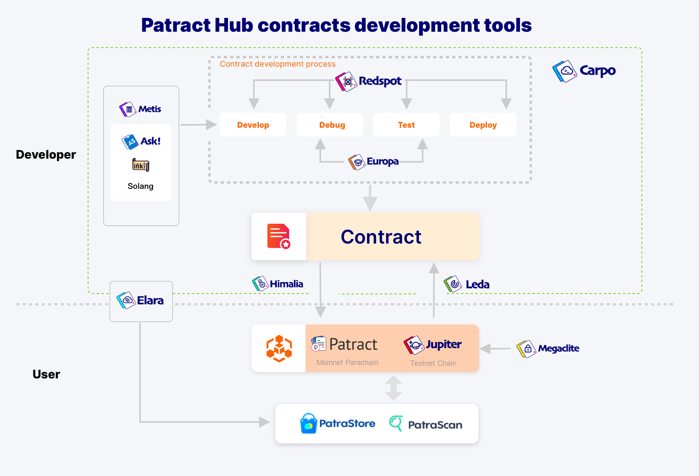

Substrate 合约书
介绍
本书用于介绍 Substrate 中与合约体系相关的一系列知识。
本书由 Patract (https://patract.io/) @ patractlabs 主导编写，由 Aten @ atenjin 负责。
本书仓库位于 https://github.com/patractlabs/substrate-contracts-book，欢迎有志之士一起为本书做出贡献。
本书主体包含三类：
- 运行合约的合约平台（模块）
- 编写合约的语言
- 帮助合约开发的工具们
其中由于pallet-evm（即EVM/solidity体系的合约）在以太坊生态中已有比较丰富的资料，故不会在本合约书中当做重点讲解。而另外的合约体系如pallet-actor，或libra移植合约平台等皆处于比较早期的研究阶段，因此也不会作为本书的重点。
本书当前主要以pallet-contracts （即WASM合约）作为主体进行介绍。
因此本书内容包含：
- 运行合约的合约平台（模块）
pallet-contracts
- 编写合约的语言
ink!Ask!Solang
- 帮助合约开发的工具们
RedspotEuropaElara- 等等
为了让合约开发者更好的理解pallet-contracts模块与WASM合约的运行方式，本书也会涉及一些WASM的介绍以及区块链合约模型的介绍。
合约综述
区块链运行合约的模型从本质上可以认为是 “区块链的环境（分布式共识系统）”+“能运行一段逻辑的平台”，例如
- 比特币的模型可以拆成区块模型/PoW + 比特币脚本
- 以太坊的模型可以拆成区块，状态模型/PoW + EVM
- Substrate的模型可以拆成区块，状态模型/Bft共识 + Runtime
因此一般来说，我们可以将区块链的模型拆成
- 运行区块链的底层系统：提供分布式可信环境
- 链的业务逻辑：运行在这个可信环境中
而由于区块链系统的特性，要求对相同的代码，相同的状态，执行的结果一定需要一致，因此在提供“链的业务逻辑”这一层，为了保证执行结果的一致性，要求整个运行环境必须是“无副作用的”，因此不会因为运行节点的不一致（指不是同一个节点）而导致运行的结果不一致。
因此为了保证这种特性，绝大部分区块链都会采用沙盒/虚拟机的模型加上裁剪一些功能来做到。
“运行合约的平台”即是一种链的业务逻辑，且这种业务逻辑特殊在其上面可运行的代码是开放的，合约内容不受链本身控制。因此对于这种情况，更需要一种“沙盒”的环境来隔离各个合约之间的运行。
什么是沙盒（虚拟机）
“沙盒”在计算机领域中的概念很广泛，而在区块链中，一般而言沙盒都会由一个虚拟机去运行（因为使用虚拟机最容易模拟沙盒的环境）。
因此不同的链就会采用不同的虚拟机来运行合约的沙盒：
-
Ethereum：
Gavin Wood 写的黄皮书提出了EVM的模型，创建了EVM虚拟机的概念并拟定了EVM的OP_CODE。之后设计了Solidity编译到OP_CODE，才有了Ethereum的整个生态。相当于Ethereum处理区块链的合约沙盒模型，从零到一构建所有设施。因此Solidity的语法以及EVM能做的事对比现在的区块链显得十分简陋（例如solidity的语法，EVM的栈深限制等等），但其作为先行者开创了区块链合约虚拟机模型先河。
-
Fabric:
作为联盟链，在使用场景上与公有链存在区别。因此Fabric提出链码的概念，并将链码运行在了docker中。docker就是比较重的一种虚拟机（相对于EVM而言），因此与EVM比较，Fabric的链码可以做到比Solidity更多的事，当然相对的，其运行的代价与EVM相比就高得多。
-
EOS：
EOS采用了Wasm作为合约的虚拟机，也是当时EOS的卖点。相比于运行Solidity的EVM，EOS的Wasm虚拟机的运行效率高了许多，以C++作为编译到Wasm的语言也天然拉近了许多传统的开发者。EOS作为Wasm虚拟机的先行者，在当时已经体现出Wasm相对于EVM的优势，但是由于其合约模型的设计（见下一章节）的缺陷以及当时环境的约束，再加上EOS并非真正的去中心化系统，导致EOS并没有很好的发挥出Wasm合约系统的能力。
-
Substrate 的
pallet-contracts：pallet-contracts采用了Wasm虚拟机来运行合约，当前出于安全考量只采用了Wasmi解释器来执行Wasm。但其合约模型与EVM的合约模型近似（见下一章节）。Wasm虚拟机与EVM同样具有启动快，随用随丢的特性，具备高性能和高扩展性的同时又不像docker， JVM一样太过庞大。因此Wasm慢慢在除了浏览器环境以外的更多场景被采用，例如边缘计算，热更新等等。所以当前越来越多的新区块链在需要一个沙盒环境时会将Wasm虚拟机作为主要方案。另一方面Wasm也具备从不同语言编译到Wasm的特性，例如rust，assemblyscript，c++等等，可以吸引到各类开发者加入到合约开发过程中。 -
其他：
其他区块链为了完成这个“沙盒”的目标也会有各自的方案，有的联盟链采用了裁剪过的JVM，有的公链采用了
RISC-V的虚拟机，有的链采用了从零设计一个虚拟机（如libra）。这些方案各自有各自的需求与特性，但从模型上而言，无论什么方案，最终目标都是为了提供一个虚拟机环境以运行合约沙盒。
运行合约的沙盒
上文已描述链的业务逻辑大部分会运行于沙盒的系统中，且“运行合约”这种业务逻辑更是需要沙盒隔离。而另一方面Substrate的runtime就是一个沙盒环境（运行于Wasm中），因此在Substrate的合约模块（pallet-emv，pallet-contracts），就是需要在一个沙盒环境中运行另一个沙盒，如下图所示：

其中：
- 左边是以太坊模型，表示每运行一个合约，需要在链的平台上启动一个EVM虚拟机去运行
- 右边是Substrate模型，我们当前已知Substrate的链的业务逻辑是运行在Wasm虚拟机当中的：
pallet-EVM：将以太坊的EVM编译到了Runtime Wasm当中，因此每运行一个合约实际上与以太坊一致，创建了一个EVM虚拟机去运行。如果链是以Wasm形态运行，即是在Wasm虚拟机中生成了一个EVM虚拟机去运行。pallet-contracts：Wasm合约使用Wasm虚拟机运行合约，与pallet-evm不同的地方是，如果链是以Wasm形态运行，Wasm合约的虚拟机是跳出当前Runtime Wasm虚拟机重新创建了一个新的Wasm虚拟机运行。- 当前（在substrate的提交之前
0b0d124d）Runtime的Wasm虚拟机推荐采用的是Wasmtime而pallet-contracts合约只能采用Wasmi。 pallet-contracts也可以使用Wasmtime执行，但是当前parity认为Wasmtime不可控性比较大，因此暂时还未采用Wasmtime。当前他们有相关计划，也有原型代码来使用Wasmtime运行pallet-contracts的合约。（注1）
- 当前（在substrate的提交之前
- 总之运行合约的过程中，大部分链都采用了一种沙盒的模型去运行合约。而对于EVM，
pallet-contracts模型而言，是每运行一个合约就会创建一个虚拟机。
注解
Wasmtime是实现了JIT的Wasm虚拟机，而Wasmi是纯解释器型的Wasm虚拟机。Wasmtime的执行效率比Wasmi高很多。
合约模型
在已经具备合约及合约沙盒的概念后，我们就可以开始讨论合约模型的概念了。
合约沙盒只是代表运行合约的环境，而合约是以什么方式运行的，合约和合约是怎么交互的，合约是怎么与链的数据互动的，这些问题就归属于合约模型问题。
换句话说，合约模型就是合约是以什么模型运行在合约沙盒/虚拟机中的。

如图所示，合约模型与合约虚拟机本质上是可以解耦的，其中关系只存在合约虚拟机是否能支持上层所需要的合约模型，例如：
- Bitcoin 的虚拟机就是比特币脚本的栈执行器，由于执行器设计是非图灵完备的OP_CODE，因此对于上层的合约模型只能支持Bitcoin的脚本。
- Ethereum 跟随Bitcoin的灵感，设计了具备图灵完备的OP_CODE，即EVM虚拟机（Ethereum Virtual Machine）。但是EVM的OP_CODE比较简陋，且只有栈的设计，没有堆的概念。但是EVM引入了读写状态的OP_CODE，因此从虚拟机机制上对合约模型可以支持状态模型。因此EVM也被看做一个执行状态转换的状态转换机（如Gavin Wood撰写的以太坊黄皮书中所描述的）。状态模型实际上是比较通用的抽象模型，绝大多数模型都可以用状态模型模拟（如在状态模型中构建UTXO模型），因此从理论上来说，只要继续完善EVM的OP_CODE，EVM的上层同样可以构建出其他合约模型。
- libra 认为区块链的核心在于资产的处理，因此提出了Move的虚拟机模型（Move Virtual Machine (MVM)）来从虚拟机上限定合约的模型，可以理解为是一种特化逻辑过的OP_CODE集合。因此MVM的上层只能运行Move模型。
通过以上讨论，我们可以认识到合约模型的概念，并且理解到虚拟机对上层合约模型的限制，因此接下来就可以讨论Wasm虚拟机可以运行的合约模型以及pallet-contracts的合约模型构成。
Wasm 虚拟机
Wasm是一种在基于栈的虚拟机上运行的二进制的指令格式。（WebAssembly (abbreviated Wasm) is a binary instruction format for a stack-based virtual machine, from https://webassembly.org/）因此Wasm的模型和主流计算机程序的模型结构比较相似。另一方面Wasm被设计成为了一种比较通用的形式，且设计了WASI并支持了运行环境自由定义host function，因此虽然Wasm从浏览器发展而来，但是当前的使用场景已经不限于浏览器，开始在边缘计算，热更新，Serverless平台等发挥效果。
若以指令的完备性来衡量一个虚拟机的能力，则EVM处于半成品的程度，限制多且不够灵活；而JVM，Wasm虚拟机则是比较完备的，限制少，功能性强。另一方面指令设计的合理性一定程度也会影响虚拟机的执行效率，同时虚拟机采用的实现方案也会对执行效率产生比较大的影响。
例如EVM当前只能以解释器（interpreter）的形式运行，并且当前的实现过程体（go, c++等版本）中没有看到针对解释器的优化，执行效率比较底下，而 JVM, Wasm等虚拟机有采用JIT的模式的实现，执行效率相当高甚至逼近本地执行的性能。
注：
pallet-contracts当前只能使用wasmi（解释器）执行Wasm代码，因此合约的执行性能比不上使用wasmtime的Runtime的执行性能。
而同时，Wasm虚拟机相比于JVM等虚拟机，十分轻便（Lightweight），快速，可定制性强，且host function的功能给予了Wasm虚拟机与宿主之间交互的通道，因此和其他虚拟机相比，将Wasm虚拟机作为区块链合约沙盒与链的功能结合在一起比较容易。
另一方面在笔者看来，Wasm是处于底层代码与上层代码之间比较好的一个抽象层，且其复杂性与完备性也远超于EVM，因此比较适合区块链合约领域的需求。
因此Wasm虚拟机提供的沙盒环境在满足合约沙盒的前提下还满足以下2点要求：
- 指令完备，功能性丰富，执行效率高
- 有适合的接口能与宿主（这里指代运行Wasm的环境，即链）交互，方便宿主提供需要的功能。
EVM 的合约模型
由于Ethereum是存储状态的区块链，因此EVM的合约模型理所应当的需要基本读写状态的功能。如果把每次合约运行的过程看做一次程序的启动到执行结束的过程，那么状态数据的变化就对应着这个程序需要持久化数据的变化。
因此对于读写状态，以太坊的EVM提供了SLOAD和SSTORE两个指令。
另一方面以太坊描述一个账户使用了“账户模型”，即将合约和调用合约的用户都看做了一个账户，在这个账户下存在balance等概念，因此EVM提供了CALLER，ORIGIN，CALLVALUE等等一系列指令来描述这种模型。
同时由于在EVM的抽象体系中，认为合约与用户是一致的，因此出现了“合约调用合约”的模型，即CALL，DELEGATECALL等指令，由此带来了合约的可组合性，造就了Ethereum繁荣的生态。而在EVM中，一个合约依托于一个EVM进行运行，因此合约调用合约是在一个EVM中启动了另一个EVM并加载指令进行执行。
当然EVM虚拟机设计的初衷就是为了解决比特币脚本的非图灵完备问题，为了解决这个问题并保证停机问题不发生，引入了指令的Gas计费模型
因此总结以上可以得到，EVM的合约模型具备以下特性：
- 处理数据的模型是状态机模型，状态的变更靠外界调用触发（类比于调用了状态变更函数的过程）；
- 合约模型中需要链相关的特性；
- 将合约与用户看做一致，允许合约调用合约；
- 引入指令计费模型。
pallet-contracts的合约模型
这里直接下结论：pallet-contracts虽然使用了Wasm虚拟机来执行代码，但是其合约模型基本与EVM合约模型一致。
也就是说pallet-contracts的合约模型同样具备以下4点特性：
- 处理数据的模型是状态机模型；
- 合约模型中需要链相关的特性；
- 将合约与用户看做一致，允许合约调用合约；
- 引入指令计费模型。
并且，在以上4种特性的基础上，增加了“存储租赁模型”：
Rent存储租赁计费。
在上文已经称述了合约执行的环境和合约模型是可以解耦的，EVM由于设计的比较早还没有解耦这个层次的概念，因此在指令中SLOAD，SSTORE及类似和链相关的指令是与EVM其他指令合并一起的。而Wasm本来并非为区块链设计，因此一定不存在这些和链环境相关的指令。
因此Wasm的host function即是用来完成这件事情的。链作为host宿主，只需要把他认为合约可能会用到的方法提供给Wasm虚拟机，让他导入这些函数对象，在合约的执行过程中即可以使用。因此通过host function，pallet-contracts合约模块就可以具备1，2，4功能，并将提供3需要的部分功能，同时第5点特性（租赁计费）也可以引入。
并且其中第3点功能的实现方式也与EVM一致，当出现合约调用合约的部分时，通过host function从Wasm回到了pallet-contracts模块，并启动了一个新的Wasm虚拟机去执行被调用的合约。（该部分在以后的文章中会描述）
因此总结而言，pallet-contracts的合约模型具备如下特性：
- 合约模型与EVM的合约模型一致，并在此基础上增加了存储计费模型
- 与链交互的实现通过Wasm的
host function特性实现
使用Wasm虚拟机实现其他合约模型
刚才简要描述了pallet-contracts是如何在Wasm虚拟机上实现合约模型的，由于前文已经解释了虚拟机与合约模型是可以解耦的，因此实际上在Wasm虚拟机上同样可以实现其他的合约模型。
例如我们可以考虑将Move虚拟机也移植到Wasm虚拟机中，其有两种可能的实现方式：
-
类比于将EVM的实现体在Runtime的Wasm环境运行，可以将MVM的实现体也编译成Wasm的形式（例如命名为
pallet-mvm），在Runtime Wasm中运行。基于这种实现，Move依然可以按正常方式编译，并和Solidity的编译结果运行于
pallet-evm一致，将Move的编译结果运行在例如pallet-mvm的平台上。 -
将MVM与所有权，链相关的特性抽象一层，做成和
pallet-contracts的形式，并设计将Move语言编译的中间码IR编译到Wasm。基于这种实现，可以将Move编译成为Wasm，并在Wasm虚拟机中运行。
其他合约模型
EOS的合约模型
EOS的合约模型与EVM类似，同时强化了账户模型的概念。因此EOS使用Wasm的方式也是基于Wasm的执行，并通过host function引入与链相关的功能。
EOS和EVM模型的主要区别在于，EOS的合约调用合约的过程是以发交易的形态调用，并且EOS的资源模型是抵押模型。当前普遍认为正是EOS的抵押模型最后导致EOS没有走向成功。
异步合约模型
pallet-actor是 substrate 尝试实现异步合约模型的一个开端，当前没有什么进展。pallet-actor的模型打算使用Wasm虚拟机作为运行环境，并在此基础上添加异步的功能以提升性能。
当前也有其他少数对异步合约模型的研究，但是皆处于比较初步的阶段。
合约语言（框架）
与“合约模型”的概念相对应的（运行平台），我们可以衍生出合约语言（框架）的概念（编写能运行于平台上的代码）。
而这里不简单的使用“合约语言”，而是用“合约语言（框架）”这样的词语，是因为由于上一章节中我们已经拆分出了“合约沙盒”与“合约模型”的结构层次，因此实际上一些新型的合约平台并不是像EVM那样“发明”了一套新的Solidity合约语言，而是选择了一些语言（如Rust，C++，AssemblyScript等），基于这门语言在“hack语法解析”，“宏”，等维度上给现有语言添加上合约相关的约束，功能逻辑等。因此许多情况下会以“框架”，“库”等形态存在（如Frame Contract Pallet的rust合约语言框架ink!）。而这种“框架/库”又不是平时程序开发中使用库的维度，有一些合约语言框架需要修改到编译器维度，因此我们更倾向称呼为“语言框架”。
合约语言（框架）与合约模型的对应关系

如上图所示，上半部分是 EVM 与 Solidity 之间的关系。由于EVM/Solidity提出的时间比较早，因此其模型与通常的计算机虚拟机与语言的模型关系是一致的。而下半部分是在分离了合约模型后，语言框架部分的对应关系。
这里重点介绍下半部分，上半部分读者可以根据自己在以太坊合约开发的经验对比后文的介绍进行分析。
在编译形语言的体系中，先简单定义以下名词（非严谨说法，仅为了后文介绍而定义）：
- S语言：程序员编写代码的原语言(source)，例如将C++编译成汇编，那么C++就是原语言S
- T语言：S语言通过编译器编译后生产的语言(target)，例如将C++编译成汇编，那么汇编就是目标语言T
前文已经介绍了运行合约体系的环境可以在逻辑上拆分为“合约模型”与“合约虚拟机”，前者管合约的业务逻辑，后者管如何运行合约的代码，那么相对应的，合约语言部分同样可以拆解为“合约语言框架”和“编译到合约虚拟机的S语言”。
那么根据这种定义，显然，Solidity就是就是一种同时具备“合约语言框架”和“S语言”特性的产物：
-
Solidity具备图灵完备的语言体系，因此Solidity是一门“语言”（相对于BTC脚本而言）
-
Solidity的语法中具备很多合约特性的关键字，对应于“合约语言框架”的概念，如：
mapping：合约存储的典型案例msg.sender,msg.value：等与合约调用相关的变量view,pure等修饰符call,delegate_call等与合约调用相关关键字
这些概念并非是为了支持Solidity这门语言能执行逻辑而存在的，而是为了服务于Ethereum合约虚拟机的业务逻辑而存在的。
而“合约语言框架”实现的目的就是为了与合约模型的业务逻辑所对应，什么样的合约模型就需要什么样的合约语言框架。例如EVM底层是k/v类型的存储，因此Solidity中设计的mapping不能遍历（除非附带多余存储）。例如EVM合约交互的合约模型设计为合约调用合约的模式，那么Solidity中就提供了call，delegate_call。对应到其他合约体系也同理。
而另一方面合约语言框架是架设到S语言上的附加功能，因此合约语言框架提供的功能最终也是编译到S语言对应的T语言上。而区块链所需要的一些特性例如确定性要求，不允许使用操作系统调用的接口等等，会在这个层面上做约束。因此合约语言框架除了本身对S语言本身提供了合约模型的功能以外，还会需要给语言本身产生一定的约束。这一步也是开发和理解合约语言框架中比较困难的地方。同时也正是由于这个点，造成了合约开发者使用合约模型框架的过程中很多别扭的情况。而Solidity或者Move等语言本身就是针对合约平台开发的新语言，纵使其语法会有很多模拟其他语言的痕迹，但是在做约束的这点上可以做到对合约开发者比较友好。而对现有语言加上合约语言框架功能的合约语言，在这一点上很难处理的很好，而这也是造成合约开发者较难使用框架功能的原因之一。
以ink!举例而言：
-
在区块链中应该避免使用float，因为浮点数可能产生非确定性行为。因此在合约/runtime开发中，若需要使用浮点数，或者出现溢出数字乘除的时候就需要引入定点数来处理。因此在ink!的合约中可以引入Substrate runtime提供的定点数的库来处理。
-
由于
pallet-contracts的合约模型与EVM基本相同，因此pallet-contracts的合约存储也是由K/V构成。那么合约模型框架就需要处理标准库里提供的各类集合类型。因此在ink!中将标准库中可能用到的集合类型重写了一遍，添加了能将集合元素类型处理成K/V数据的过程。因此在ink!的合约存储中，若设计了集合类型，只能使用ink!标准库中提供的类型。而另一方面由于ink!的返回值需要导出metadata令第三方处理，而当前的metadata的接口实现只给标准库中的集合实现，因此ink!方法的返回值的集合只能使用标准库的集合类型。因此就会出现以下代码：#[ink::contract] mod test { // 引入 ink 实现的 Vec use ink_storage::collections::Vec as StorageVec; // 引入标准库的Vec use ink_prelude::vec::Vec; #[ink(storage)] pub struct Test { owners: StorageVec<AccountId>, // 只能使用 ink的Vec } impl Test { #[ink(message)] pub fn get_owners(&self) -> Vec<AccountId> { // 将 ink 实现的 Vec 转换为 标准库实现的 Vec self.owners.iter().map(Clone::clone).collect() } } }
因此总结而言，在模型结构上，开发者需要理解到：
- 合约语言框架与合约模型是对应关系，语言框架的特性会与模型一一匹配；
- 合约语言框架对S语言提供了针对合约模型的业务功能，同时也根据合约业务逻辑的需求对S语言本身有约束。
不过由于Solidity本身定位就是服务于写合约而设计出来的语言，因此许多与合约相关的功能能够设计为关键字。而若是一门语言本身并不是针对合约设计的，则需要基于这门合约设计对应于合约模型的“合约语言框架”。由于是在这门语言上添加新的功能，因此一般情况下很难与语言本身结合的比较深入。因此最后做到的成果与这门语言提供的能拓展语法树的能力相关。语言本身提供了越灵活修改/添加语法树的接口（宏，插件等），那么合约语言框架就可以实现越多的功能。语言本身提供这类可扩展性的功能越少，那么合约语言框架就只能考虑修改编译器，扩展需要的语法以支持合约模型，这样最后的语言就变成了原语言的一种“方言”了。因此前者可以以库/框架的形态存在，而后者则变为了一门新的语言，这也是我们将这种模型称为“合约语言框架”的原因。
pallet-contracts 与对应的合约语言框架

在上文解释了合约语言框架的模型后，我们就可以把合约模型框架套在Substrate的Wasm合约系统上了。
那么显然，ink!这整套系统的实现，就是与pallet-contracts的合约模型相对应的。ink! 3.0通过过程宏（2.0通过神声明宏）的系统，将对应于pallet-contracts的功能逻辑引入到了rust当中。因此这套系统里的S语言就是rust，而T语言就是Wasm字节码。ink!在一个辅助工具cargo-contract的帮助下，将使用了ink!框架的rust代码编译成为了合约的Wasm字字节码。而Wasm字节码在链上运行的环境就是wasmi（将来也会引入Wasmtime等JIT形式的执行环境）。
而由于pallet-contracts的执行环境是Wasm字节码，因此能够编译成Wasm字节码的的语言配套上符合pallet-contracts合约模型的合约语言框架，都可以产生能运行于pallet-contracts这个合约平台上的合约。所以对于pallet-contracts而言，完全可以设计不同语言的合约体系给发开发提供多种选择使用不同的语言开发Wasm合约。
当前支持运行于pallet-contracts的合约语言框架除了对于rust的ink!之外，还有以下项目：
- Ask!, 由 Patract 主导开发，是在AssemblyScript语言上的合约语言框架。(当前正在开发中)
- Solang, 由 hyperledger-labs 主导开发，支持将 Solidity 编译到
pallet-contracts的Wasm的工具。
Wasm简要介绍
Wasm与合约模型的关联

pallet-contracts 合约模块
pallet-contracts合约模块, 一般称呼为“Contracts Pallet” 或者 “FRAME Contracts pallet”，又或者称呼为“Substrate Smart Contracts”，是parity官方研发的Wasm合约模块。
依据Substrate knowledgebase的介绍，Contracts Pallet具备如下特性：
- Are inherently safer to the network.
- Have built in economic incentives against abuse.
- Have computational overhead to support graceful failures in logic.
- Have a lower bar to entry for development.
- Enable fast pace community interaction through a playground to write new logic.
ink
ink! is an eDSL to write WebAssembly based smart contracts using the Rust programming language. The compilation target are blockchains built on the Substrate framework.
ink! 是 parity 官方编写的，可以提供一种 eDSL 的方式编写 Rust 合约，并编译为 Wasm 运行于 Contracts Pallet 模块上。
虽然 ink!自称为一种写合约的 eDSL，但是笔者更倾向于认为 ink!是使用 Rust 语言编写符合能满足 Contracts Pallet 运行的合约框架。
例如对于 EVM 而言，若把 EVM 的指令集看做一种规范（EVM 的指令集已经包含了 EVM 合约模型的信息），那么只要能编译到 EVM 指令集的语言都可以称为能运行在 EVM 上的合约语言，例如：
- Solidity
- Vyper
而 ink!这里同理。Contracts Pallet 要求是能满足运行 Contracts Pallet 合约模型的 Wasm 代码，因此任何能编译成满足这个 Wasm 合约模型的框架/语言/库都可以称为 Contracts Pallet 的合约语言。
ink!就是使用 Rust 语言，并在此基础上通过 Rust 的卫生宏系统设计了一套 eDSL，并使用该 eDSL 编写能满足 Contracts Pallet 要求的 Rust 代码。除 eDSL 之外，ink!还提供了适用于合约模型的存储集合类型，生成 Metadata（对应于 Solidity 的 ABI）等工具库。
ink!的官方文档见：
ink! 到 Contracts pallet 的过程
parity 官方文档中提供了示例图：

由此图可知，编写 ink!合约并部署的过程需要
- ink! 依赖库：提供 ink!的 eDSL 框架以及提供相应的依赖组件
- cargo-contract: 编译 ink!合约的工具
- SDK：与链交互并将合约部署到链上的 SDK，parity 官方主要提供了
polkadot.js，Patract 提供了 Himalia 工具包，包含go，java，python，C#的 SDK
本章节将主要介绍 ink!以及cargo-contract的信息，关于 SDK 的信息放在后续章节介绍。
ink! tutorial
TODO
ink! 框架
ink!的所有主体功能都实现于 ink/crates 目录下：
- crates:
- allocator：与Wasm相关，定义allocator，开发者绝大部分情况下无需关心
- env：提供和链相交互的组件，总结来说就是和链相关的部分都会放在这里，包含
- host function 部分
- 部分需要导入的类型、trait定义
- event 的topic
- lang：eDSL过程宏的定义组件，合约的规范由这个地方决定
- metadata：生成metadata的组件
- prelude：合约编写过程中需要预先导入的包，包含一些标准库
- primitives：操作状态存储的指针，开发者绝大部分情况下无需关心
- storage：提供链存储的分配模型以及提供一些预定义好的存储集合类型
ink! eDSL基础元素
ink! eDSL设计的元素与Solidity的元素其实比较近似，因为Contracts Pallet的合约模型结构和EVM的合约模型就是比较近似的。
因此ink!的设计可以找到很多和Solidity相似的影子（Substrate 的 Runtime 设计同理）。后文描述ink特性时会尝试跟Solidity的特性进行对比，方便读者理解。
eDSL 的元素
由ink!文档或ink!提供的example，代码可以看出，ink!在Contracts Pallet的模型上，同样提出了以下三点基础元素：
constructor/messagestorageevent
不过由于Rust过程宏的设计关系，可以看到ink!首先要求一个合约需要处于一个mod下，并且在这个mod的上面添加上#[ink::contract]宏：
#[ink::contract]
mod erc20 {
// ...
}
这样，相当于告知ink!从这个mod里面的东西就是要依据ink的eDSL处理的部分。
#[ink::contract]
因此当遇到宏#[ink::contract]，即表面这是在ink!所识别的“合约部分”。因此我们可以看到，很多use xxx的导入都会放到处于#[ink::contract]的mod作用域下。
并且当前ink!设计为，在一个crate包下，只能出现一个#[ink::contract]，因此代表着ink!认为一个合约的维度是以rust的crate为单位，即如果在同一个crate中，无论是在同一个文件（比如都在lib.rs下）或者是在不同的文件中定义了2个以上的被#[ink::contract]修饰的mod，例如：
#[ink::contract]
mod erc20 {
// ...
}
#[ink::contract]
mod another_define {
// ...
}
类比于solidity的：
// a.sol 在同一个文件中定义多个 `contract`
contract A {
}
contract B {
}
那么在ink!的编译中会认为这种情况是非法的。
当然与之相对的，只要在当前crate中只有一个#[ink::contract]修饰的mod，其他mod该怎么正常使用就正常使用，因此ink!修饰的合约crate依然可以很好的做好代码隔离，增强可读性和可维护性。这个能力对于维护大型复杂合约比较重要，例如：
#[ink::contract]
mod erc20 {
use crete::another_define::*;
}
mod another_define {
// ...
}
例如如下实例：
mod fxck {
use crate::erc20::Erc20;
use ::ink_lang::Env; // 注意这里需要引入 `ink_lang::Env`
impl Erc20 {
pub fn tmp(&self) {
self.env().caller(); //
}
}
}
#[ink::contract]
mod erc20 {
#[ink(storage)]
pub struct Erc20 { ... }
impl Erc20 {
#[ink(constructor)]
pub fn new(initial_supply: Balance) -> Self { ... }
#[ink(message)]
pub fn transfer(&mut self, initial_supply: Balance) -> Self {
self.tmp(); // 调用在其他`mod`里定义的方法
}
}
}
这种模型可以做到一些在Solidity下做不到的代码隔离，增强可维护性。（因为Solidity的library只能用于纯函数计算）
总结而言，在ink!体系下：
- 一个合约以一个
crate的单位，一个crate内只能出现一个#[ink::contract]定义； #[ink::contract]修饰的mod代表合约的内容，同时也代表了合约的基础元素都必须定义到这个mod下；- 除
#[ink::contract]修饰的mod以外的部分（其他mod，函数，类型）皆遵循rust的规则，可以做好良好的代码隔离提升可维护性； - 实践中可以将
#[ink::contract]修饰的mod当做合约的入口，将实现的逻辑分散到其他mod下。
以下使用“合约mod”表示被#[ink::contract]修饰的mod
storage
在合约mod中，一定需要定义一个结构体，且这个结构体被#[ink(storage)]所修饰，表示定义了该合约的存储。
同时这个被#[ink(storage)]修饰的结构体定义，也被视作一个可操作的合约实体，因此所有与合约相关的资源，类型，操作都会和这个结构体绑定在一起，当在合约调用合约的情景中，被调用的合约的类型也由这个结构体来表示。
因此这个结构体可以理解为是合约实体。
虽然修饰
mod的部分才是合约，但是因为mod在rust中只能代表作用域，因此为了实践使用，使用#[ink(storage)]修饰的结构体表示能够进行操作的合约实体。在这种语境下，可以将
#[ink::contract]修饰的mod理解为“开启了合约域”的概念，而#[ink(storage)]修饰的stuct是在这个合约域下的合约。
这里ink!定义的storage的概念和Solidity中定义“存储”的概念一致，表示定义在这里的属性即是最终写到链上的状态。一切合约逻辑编写的目的最后都是为了对这里定义的状态的修改。
不过由于当前ink!采用使用一个结构体来承载合约状态的方案，因此当前这个合约所有的状态都只能定义在这个结构体中。当合约设计得比较大，比较复杂的时候会导致这里的可维护性下降。
定义storage的示例如下：
#[ink(storage)]
pub struct Erc20 {
/// Total token supply.
total_supply: Lazy<Balance>,
/// Mapping from owner to number of owned token.
balances: StorageHashMap<AccountId, Balance>,
/// Mapping of the token amount which an account is allowed to withdraw
/// from another account.
allowances: StorageHashMap<(AccountId, AccountId), Balance>,
}
被#[ink(storage)]修饰的结构体在后文统称为合约结构体。
这里尤其需要注意几个特性：
-
在该合约结构体内定义的属性的类型必须是实现过
SpreadLayout的类型（或者更准确说是实现了PackedLayout的类型，因为PackedLayout是继承于SpreadLayout的定义）：/// Types that can be stored to and loaded from the contract storage. pub trait SpreadLayout { }这里只能使用实现过这个trait的类型的理由很简单，因为storage和一般的类型不同，其必须含有“链”的信息在其中，因此不同的链的合约实现都必须有一个部分用于处理合约中的storage（即状态）的分配问题。
例如Solidity在编译过程给实际上是按storage在合约中定义的上下顺序，做偏移分配该状态的key。这里实现过
SpredLayout或者说PackedLayout类型的都会有一个近似的过程来进行状态的分配。ink!对于一般类型已经都做过基础实现，但是对于集合类型（
Vec，HashMap等）而言，由于合约的状态需要hook读写的过程，因此无法对集合类型实现这个trait。所以在ink!中，对标准库中常用的集合类型重新全部做了一次实现，且位于#[ink(storage)]修饰的结构体的属性类型，若使用集合类型时，必须使用ink!提供的集合类型。由于Solidity比较简陋，因此Solidity定义的存储map是无法进行遍历的。（由Solidity设计的缺陷导致）
ink!在设计的这块的时候进一步做了很多事情，因此ink!提供的集合类型
Vec，BTreeMap，HashMap等等都是可以遍历的。相较于Solidity能实现的功能而言是相当大的进步。 -
即便基于以上的设计，嵌套集合类型依然很难实现（因为Substrate的状态结构采用了k/v模型）。因此在设计中还是只能尽量避免嵌套集合类型。如果一定需要嵌套集合类型，需要将嵌套的层次打平（flat），将第二层的key和第一层的key合并一起，使用元组替代（相当于Substrate Runtime中的
double_map）// solidity contract A { mapping (uint => mapping (uint => uint)) }在ink!中类似的代码应该为:
#[ink(storage)] pub struct Erc20 { // 注意这里的key采用了元组 `(AccountId, AccountId)` allowances: StorageHashMap<(AccountId, AccountId), Balance>, } -
storage中提供了一种
Lazy的模型，允许开发者使用Lazy包裹一个类型，可以让状态数据在使用到的情况下再加载：/// A lazy storage entity. /// /// This loads its value from storage upon first use. /// /// # Note /// /// Use this if the storage field doesn't need to be loaded in some or most cases. #[derive(Debug)] pub struct Lazy<T> where T: SpreadLayout, { cell: LazyCell<T>, }使用方式：
#[ink(storage)] pub struct Erc20 { /// Total token supply. total_supply: Lazy<Balance>, }
constructor/message
constructor/message就是触发合约状态变更的入口函数。也就是说constructor/message即是合约状态的状态转换函数。
constructor/message只能修饰合约结构体的方法，不能用来修饰其他结构体的方法，或者其他纯函数。
在合约mod中，被constructor和message修饰的合约结构体的方法至少各有一个，若分别少于1个都会导致编译错误。
其中：
-
constructor即对应着 Solidity 合约中的构造函数。当合约被部署的时候（在Contracts Pallet中当前代表着从已上传的合约代码中做instantiate的过程），会触发对应构造函数的调用。这里需要强调，构造函数的调用与合约实例化是2个概念的事情，这个过程在ink!和Contracts Pallet的协调过程中并非原子化。因此会出现构造函数没有被调用，但是合约地址会生成，也可以正常调用这个未调用过构造函数的合约实例的情况。
典型的例子是在调用
instantiate的时候传入的错误编码的参数。 -
message即对应着 Solidity 合约中的public/external等 的 call 方法。由于Rust可变/不可变方法的特性，message利用了这个特性来表示这个方法是否会修改合约的状态。因此若
message修饰的方法是// 注意方法的第一个参数是`&self` #[ink(message)] pub fn total_supply(&self) -> Balance { *self.total_supply }则表示这个方法的调用不会修改状态（由rust语法所控制），和以太坊一致，这类方法多用于rpc调用返回一个合约的存储，或返回一些基于存储的计算结果。
若修饰的是
// 注意方法的第一个参数是 `&mut self` pub fn transfer(&mut self, to: AccountId, value: Balance) -> Result<()> { let from = self.env().caller(); self.transfer_from_to(from, to, value) }则表示这个方法的调用会修改状态，因此这个方法如果是以交易调用被打包的形式被调用执行时，会触发状态的改变。若是以rpc调用时，表示是模拟执行了一次。
同时在合约编译后会生成metadata.json（对应Solidity的ABI），在这个metadata中对于message部分会有一个
mutates的字段来标示这个方法是否是可变的。
message的selector
Solidity对于合约方法的ABI的产生使用的是将方法名加上参数类型作为函数签名拼凑成为字符串然后做hash取前4字节。
call = "func_name(param1_type,param2_type,...)"
bytes4(keccak256(call), a, b)
在ink!中这种让合约区分调用触发点的概念叫做selector。
由于rust不支持函数重载，因此在ink!中采用了比较简陋的设计，直接对函数名字的字符串做hash取前4字节：
call = "func_name"
blake2_512(call)[0..4]
笔者认为这种设计造成了其他合约语言设计的困扰。因为rust不支持重载不代表别的语言不支持重载。当前Solang将Solidity编译到Wasm的过程后，想和ink!的metadata做兼容，互相调用就会出现问题。
另一方面selector也可以运行合约开发者自己定义的
#![allow(unused)] fn main() { #[ink(message, selector = "0xCAFEBABE")] pub fn was_it_ten(&self) -> bool { ... } }
message的payable
Solidity中对于方法会有一个payable的修饰符，用于表示这个方法可以接受一定金额。
因此在ink!中也提供payable来表示调用这个方法的同时是否可以附带转移一定的本币的金额。在ink!当前的设计中，若在调用一个非payable的message时同时附带了金额时，这个调用过程会认为是错误的。
默认情况下认为paybale是false的，只有当合约开发者指定了payable后才是true。
指定一个message是可调用的案例是：
#![allow(unused)] fn main() { #[ink(message, playable)] pub fn was_it_ten(&self) -> bool { ... } }
另一方面在metadata中，对于message部分会有一个payable的字段来标示这个方法是否是需要付费的。
event
event的概念在状态机模型中其实并不是必须的。但是由于区块链是一个异步系统，因此在发送交易去触发状态变更后，并不能马上知道变更结果，只能依赖监听某个元素来判定执行结果。event便是在Solidity的阶段设计的元素，这个设计同样被继承到了Substrate Runtime中，以及ink!中。
笔者不觉得event是一个很好的设计，理论上有其他更好的方式，或者event的变种。event一定程度上会造成开发者的滥用。
ink!的event在Contracts Pallet中最后是通过host function将合约定义的event打印到了链的event当中。
ink!的event设计和Solidity相比就没有什么特别的地方了，不过由于是在Wasm中运行的合约，因此打印合约的event需要通过host function与链进行交互，因此调用的方式需要通过env()去调用。
Self::env().emit_event(...);
// or use
self.env().emit_event(...);
ink! 跨合约调用
ink! 与solidity的对比
cargo-contract
ink! 当前的坑
Ask!
Ask! 是由 Patract 设计的，基于 AssemblyScript 上构建的，能运行于pallet-contracts模块上的Wasm合约语言框架。
尽管 AssemblyScript 只是 typescript 的一个子集，但是有很多使用 typescript 作为开发语言的开发人员，因此这些开发人员学习 AssemblyScript 的成本非常低。 因此，Patract 认为 Ask! 项目具有很好的应用开发前景。与基于Rust的ink!相比，Patract 认为基于 typescript 的Ask! 可以有效降低合同开发者的门槛并丰富合同开发生态系统。
Ask! 使用和 ink! 采取宏设计eDSL这样类似的方式，通过在 AssemblyScript （后文称作AS）中提供注解，在AS的语法基础上提供了能适用于pallet-contracts合约模型上的功能。通过注解的这种实现方式，尽量隐藏了与合约相关的细节。另一方面 Ask! 的实现将会与 ink! 接近，在最终实现上将会最大程度保证与 ink! 合约的兼容。
例如： ink! 描述合约的外部调用接口采用
#[ink(constructor)],#[ink(message)]对合约结构体的方法进行修饰。 在 Ask! 中，将会采用@constructor，@action等注解修饰合约的类方法，实现类似的功能。
Ask! 开发进度
Ask! 当前还在开发当中，当前只完成了Kusama财政议案的v0.1版。当前的很多设计将来都有可能发生不兼容性改变。
TODO： 添加议案链接及报告链接。
tutorial
当前 Ask! 只进行了Kusama国库议案的第一期的开发。因此还未发布到npm等公开仓库中。
简单运行：
-
clone 项目
$ git clone https://github.com/patractlabs/ask -
案例合约
在Ask!项目中准备了一些案例合约例如
flipper，incrementer等，在/example目录下。开发者可以直接参考这些项目，也可以通过新建一个typescript文件(*.ts)来执行下列过程。以下示例过程的最终代码位于/example/solar目录下。-
新建文件
solar.ts -
定义合约存储
Ask! 采用注解
@storage定义一个合约的存储。这个过程类似于ink!中的#[ink(storage)]宏。例如在这个案例中，我们定义下面3个合约存储变量：@storage class Planets { name: string; radius: u32; isdwarf: boolean; } -
定义合约的范围及可调用方法：
Ask! 采用
@contract注解来指定一个class为合约类。这个过程类似于ink!中的#[ink::contract]宏。@contract class SolarSystem { // ... }Ask! 提供了
@constructor和@message注解修饰合约类中的方法，类似于ink!中的#[ink(constructor)]和#[ink(message)]。@contract class SolarSystem { @constructor default(name: string) void { /*...*/ } @message(mutates = false, selector = "0x0a0b0c0d") getRadius(): u32 { /*...*/ } } -
编译 Ask! 合约
-
安装依赖环境：
进入Ask!项目的根目录，执行命令：
$ npm install -
编译
在 Ask! 项目的根目录下编译合约。假设当前合约的路径位于
examples/solar/solar.ts（开发者可以替换为自己合约文件的路径），则编译命令是：./assembly/codegen/bin/ask examples/solar/solar.ts执行了这个命令后，会在合约文件的目录下生成一个扩展文件
extension.ts，且合约的编译产物位于合约文件目录下的target目录。 -
测试
开发者可以采用 Patract 提供的合约执行环境沙盒 Europa 进行合约的部署调用和测试。
启动 Europa后，开发者可以通过 https://polkadot.js.org/apps 将
target目录下的合约进行部署和调用，这个过程和 ink! 合约的操作过程一致。
-
-
设计
Ask! 设计总览
AssemblyScript 使用 asc 编译器将TypeScript（TS）文件编译为WebAssembly字节码。 但是，asc是通用编译工具，无法使用智能合约结构将TS文件直接编译为WASM字节码和元数据信息。因此为了使 asc 能够识别并解析 Ask! 提供的和合约相关的注解与特定语法，需要对 asc 进行修改。
设计
ask! 将提供 Contract Framework（在以下描述中称为 Framework）和Contract PreProcessor（在以下描述中称为PreProcessor）两个组件。 此外，我们还将提供一个名为ask-cli的支持工具（类似于ink!的cargo-contract），用于帮助建立和管理用Ask！编写的Wasm智能合约。
Ask!的功能按照如下实现：
-
Framework的主要功能是为链上API提供高级包装，然后提供用于通过注解类型编写合约的规范。它需要完成以下任务：- 定义基于注解的合约撰写规范
- 在元数据中定义合约接口的描述规范
- 封装合约与链之间数据交互的详细信息，例如合约存储中密钥生成规则的定义以及存储的读写
- 封装链上的功能组件，例如Balance，AccountId，Block，Crypto等。
- 根据合约的语义将AS合约编译为Wasm代码，并包含与FRAME合约的交互接口的链接符号。
-
PreProcessor的主要功能是解析框架中定义的注解，并为这些注解生成相应的逻辑代码。根据框架中的合约接口规范，生成元数据文件。这个部分需要完成以下任务：- 解析合约中的注解并生成相应的逻辑代码
- 解析合约接口和参数，并生成元数据文件
- 解析自定义合约语法（语法糖），并生成相应的逻辑代码
- 自动存储和加载数据
-
ask-cli的主要功能是在cli中管理Ask!项目，其中包括以下功能：- 创建ask!合约模板。
- 简化ask!在项目编译过程中，隐藏预处理和编译过程的详细信息。
- 管理
Framework，PreProcessor和Compiler的版本依赖性。 - 检查所生成的Wasm代码的合法性。
基础
example
Solang
Redspot
Redspot是让ink!，Ask!等合约开发项目化，简化开发者对合约的测试和交互过程的合约集成构建工具。Redspot 的功能覆盖整个合约开发环节（开发-调试-测试-部署），并且可以允许开发者构建丰富的插件以扩展Redspot的功能，最大程度简化合约开发者的负担，自动化执行重复的过程。
Redspot的设计目标类似Ethereum 生态中的Truffle，但是会比 Truffle 具备更广泛的扩展功能。
Patract 认为Redspot必须是一个灵活的系统，因为pallet-contracts合约模块可以被直接，或在一定程度上的修改后集成到Substrate链中。因此，Redspot决定使用 hardhat 作为Redspot核心架构，因为它具有出色的设计，允许开发人员使用插件来添加新功能。
因此 Redspot 从 hardhat fork 而来（基于MIT协议），并在其基础上移除了与以太坊相关的部分，并添加和Substrate及pallet-contracts模块相关的功能。在未来，Redspot将会基于hardhat的核心构建更多的功能。
tutorial
环境准备
安装 Node
我们要求node 版本>= 12.0，如果不是，则可以访问nodejs网站并了解如何安装或升级。或者我们建议您使用nvm安装Node。Windows用户可以改用nvm-windows。
ink! 合约编译的工具链
-
rust 环境。由于 ink! 合约需要rust 的 Wasm 工具链，且当前Wasm只能在nightly工具链下运行，因此开发者需要先准备 Wasm 编译环境：
rustup install nightly rustup component add rust-src --toolchain nightly rustup target add wasm32-unknown-unknown --toolchain nightly -
ink! 编译合约的工具
cargo-contract请注意以下命令安装的是parity默认提供的官方
cargo-contract（当前最新为0.10.0版本）.cargo install cargo-contract --force若与Europa的话可以采用由 Patract 提供的
cargo-contract，这个版中中提供了一个-d/--debug的可选命令cargo install cargo-contract --git https://github.com/patractlabs/cargo-contract --branch=v0.10.0 --force当前若安装
cargo-contract的时候没有添加featurebinaryen-as-dependency，则需要在当前环境中准备wasm-opt。 -
安装
wasm-opt（可选）
wasm-opt 来自仓库 https://github.com/WebAssembly/binaryen。开发者可以直接在release中下载到对应平台的最新的编译产物。通过直接下载的编译产物请放置在能被任意访问的PATH路径下。
或者开发者也可以通过系统命令安装wasm-opt
TODO 确定不同平台的安装方式
准备能运行合约的区块链节点
1. Jupiter
Jupiter https://github.com/patractlabs/jupiter 是 Patract 维护的，包含 Patract 合约设计规范并兼容最新 pallet-contracts 模块的合约测试网。
Jupiter 有三类节点：
- 运行于 rococo 上的 Jupiter 合约平行链；
- 独立运行对外提供最新合约功能的 Jupiter 独立测试网；
- 适用于本地快速测试的 Jupiter 节点
这三类节点的区别及编译安装等信息请参阅该项目的Readme。
2. Europa
Europa https://github.com/patractlabs/europa 是 Patract 设计的用于帮助合约开发者调试及测试合约的合约沙盒。该合约沙盒的定位类似于 Ethereum 生态中的 Ganache，但 Europa 的特性更多的体现在其提供了部署调用合约过程中的详细执行信息的日志，能够最大程度反应出合约模块这个“黑盒”的运行情况，对合约的开发者十分有帮助。
开发者可以简单的通过以下方式安装并启动Europa：
cargo install europa --git https://github.com/patractlabs/europa --locked --force
europa --tmp
Europa 不同的版本及其他信息请参阅该项目的Readme。
3. Canvas
Canvas https://github.com/paritytech/canvas-node 是 parity 官方提供的具备 pallet-contracts 模块的合约测试链，这个测试链是一个 parity ink! & pallet-contracts 开发组维护的测试网。
参与 canvas 网络的方式请参照该项目的 Readme。若目的只是为了在本地运行测试节点，可以执行如下命令：
cargo install canvas-node --git https://github.com/paritytech/canvas-node.git --force --locked
canvas --dev --tmp
创建 Redspot 项目
从模版安装
Redspot 提供合约开发模版，可以让用户快速搭建起一个项目。目前仅支持安装 erc20 合约的模版。
如果要从模版创建一个新项目，可以选择使用 npx 。npx 是 npm (npm 5.2+ ) 里自带的一个包执行器。执行以下命令将会拉取最新的Redspot，并以 erc20 为模板构建出 Redspot 项目。
npx redspot-new erc20
注意由于当前 ink! 变动频繁，因此Redspot还未提供从模板创建项目功能。开发者若需要其他项目模板，可以从 Redspot 的项目仓库 https://github.com/patractlabs/redspot 中的 example 目录中拷贝到任意目录下，并更改例如项目名等配置。example 目录下的所有案例都已经是 Redspot 项目结构，因此不需要用户再执行
npx redspot-new创建项目。
若一个项目已经由 Redspot 创建，则该项目根目录下一定存在一个文件redspot.config.ts以标志这个项目是Redspot。同时相同目录下的package.json则控制了这个项目对应的Redspot的版本。
若合约开发者从github，或者example，或者其他情况下获取到了别的开发者已经构建好的Redspot项目，则进入到这个项目目录下并执行yarn install命令可以恢复出该Redspot项目使用的Redspot环境，例如如下案例：
# copy the delegator multi-contract example from redspot repo to local dir
cp -r ./redpost/example/delegator ./
cd delegator
yarn install
默认的模版是已经配置了 typescript 。也推荐大家使用 typescript 进行开发。即使没有 typescript 经验，typescript 也是兼容 javascript 的，不定义任何类型，也可以正常运行，并且仍然能够拥有 typescript 强大的类型提示和错误提示功能。
集成到已有的合约项目中
Redspot 也可以很轻松的集成到已存在的合约项目中。我们以官方的 ink (https://github.com/paritytech/ink)仓库中的 examples 目录下的合约为例。
编译合约
首先克隆 ink 仓库并打开 ink 目录：
git clone https://github.com/paritytech/ink.git
cd ink
然后我们在 ink 的根目录中创建以下三个文件：
redspot.config.ts:
import { RedspotUserConfig } from 'redspot/types';
import '@redspot/patract'; // 引入 @redspot/patract 插件
import '@redspot/chai'; // 引入 @redspot/chai 插件
export default {
defaultNetwork: 'development', // 默认的 network
contract: {
ink: {
toolchain: 'nightly', // 指定编译合约时的 toolchain 版本
sources: ['examples/**/*'] // 合约所在的目录
}
},
networks: {
// development 网络的配置
development: {
endpoint: 'ws://127.0.0.1:9944',
types: {},
gasLimit: '400000000000', // 设置默认的 gasLimit
explorerUrl:
'https://polkadot.js.org/apps/#/explorer/query/?rpc=ws://127.0.0.1:9944/'
},
},
mocha: {
timeout: 60000
}
} as RedspotUserConfig;
package.json:
{
"name": "examples",
"version": "0.1.0",
"private": true,
"resolutions": {
"@polkadot/api": "^3.10.2",
"@polkadot/api-contract": "^3.10.2"
},
"dependencies": {
"@redspot/chai": "^0.10.1",
"@redspot/patract": "^0.10.1",
"@types/chai": "^4.2.14",
"@types/mocha": "^8.0.3",
"chai": "^4.2.0",
"redspot": "^0.10.1",
"typescript": "^4.0.2"
},
"scripts": {
"build": "npx redspot compile",
"test": "npx redspot test"
}
}
tsconfig.json:
{
"compilerOptions": {
"target": "es5",
"module": "commonjs",
"strict": true,
"esModuleInterop": true,
"outDir": "dist",
"noImplicitAny": false
},
"include": [
"**/*.ts"
],
"exclude": [
"node_modules"
],
"files": [
"./redspot.config.ts",
]
}
然后安装 npm 依赖（推荐使用 yarn 作为包管理器）：
yarn 或者 npm install
然后在项目的根目录运行命令 npx redspot compile 将会编译 examples 下的所有合约，现在我们执行以下命令：
npx redspot compile examples/erc20
该命令会指定编译 erc20 合约。编译完成后，你可以在 artifacts 目录下找到编译的产物。
部署合约
现在我们可以通过 Redspot 运行一个部署脚本了，在 ink 根目录创建这个文件：
deploy.ts
import { network, patract } from "redspot";
const { getContractFactory } = patract;
const { getSigners, api } = network;
async function run() {
console.log("deploy erc20");
await api.isReady;
console.log("deploy erc201");
const signers = await getSigners();
const signer = signers[0];
const contractFactory = await getContractFactory("erc20", signer);
const contract = await contractFactory.deploy("new", "1000000", {
gasLimit: "200000000000",
value: "10000000000000000",
});
console.log(
"Deploy successfully. The contract address: ",
contract.address.toString()
);
api.disconnect();
}
run().catch((err) => {
console.log(err);
});
然后你确保已经在 redspot.config.ts 中正确配置了网络:
{
...
networks: {
development: {
endpoint: 'ws://127.0.0.1:9944', //
types: {},
...
},
},
}
现在可以运行 deploy.ts 文件了，加上 --no-compile 防止重复编译：
npx redspot run ./deploy.ts --no-compile
合约部署成功后，你会得到类似这样的信息：
Deploy successfully. The contract address: 5CqB5Mh9UdVbTE1Gt5PJfWSiCHydJaJsA31HjKGti1Z2fn78
测试合约
我们在 tests 目录下新增 erc20.test.ts 文件，用来测试 erc20 合约：
tests/erc20.test.ts
import BN from 'bn.js';
import { expect } from 'chai';
import { patract, network, artifacts } from 'redspot';
const { getContractFactory, getRandomSigner } = patract;
const { api, getSigners } = network;
describe('ERC20', () => {
after(() => {
return api.disconnect();
});
async function setup() {
const one = new BN(10).pow(new BN(api.registry.chainDecimals[0]));
const signers = await getSigners();
const Alice = signers[0];
const sender = Alice;
const contractFactory = await getContractFactory('erc20', sender);
const contract = await contractFactory.deploy('new', '1000');
const abi = artifacts.readArtifact('erc20');
const receiver = await getRandomSigner();
return { sender, contractFactory, contract, abi, receiver, Alice, one };
}
it('Assigns initial balance', async () => {
const { contract, sender } = await setup();
const result = await contract.query.balanceOf(sender.address);
expect(result.output).to.equal(1000);
});
it('Transfer emits event', async () => {
const { contract, sender, receiver } = await setup();
await expect(contract.tx.transfer(receiver.address, 7))
.to.emit(contract, 'Transfer')
.withArgs(sender.address, receiver.address, 7);
});
it('Can not transfer above the amount', async () => {
const { contract, receiver } = await setup();
await expect(contract.tx.transfer(receiver.address, 1007)).to.not.emit(
contract,
'Transfer'
);
});
it('Can not transfer from empty account', async () => {
const { contract, Alice, one, sender } = await setup();
const emptyAccount = await getRandomSigner(Alice, one.muln(10000));
await expect(
contract.tx.transfer(sender.address, 7, {
signer: emptyAccount
})
).to.not.emit(contract, 'Transfer');
});
});
运行测试命令：
npx redspot test --no-compile
你将会得到以下类似结果：
....
✓ Can not transfer from empty account (17912ms)
4 passing (46s)
项目开发
进入新创建的Redspot的项目的根目录下，执行以下命令可查看当前 Redspot 支持的任务（Tasks）:
npx redspot
Task 的概念请参照该文档 Tasks。
运行 npx redspot --help 查看帮助：
Redspot version 0.10.1
Usage: redspot [GLOBAL OPTIONS] <TASK> [TASK OPTIONS]
GLOBAL OPTIONS:
--config A Redspot config file.
--help Shows this message, or a task's help if its name is provided
--log-level Set log levels 1-5
--max-memory The maximum amount of memory that Redspot can use.
--network The network to connect to.
--show-stack-traces Show stack traces.
--tsconfig Reserved redspot argument -- Has no effect.
--verbose Enables Redspot verbose logging
--version Shows redspot's version.
AVAILABLE TASKS:
check Check whatever you need
clean Clears the cache and deletes all artifacts
compile Compiles the entire project, building all artifacts
console Opens a redspot console
help Prints this message
run Runs a user-defined script after compiling the project
test Runs mocha tests
To get help for a specific task run: npx redspot help [task]
可以看到帮助信息有两个部分，GLOBAL OPTIONS 和 TASKS。通过 TASK ，我们可以调用Redspot内置的任务或者自定义的任务。比如
npx redspot compile 可以运行编译合约命令。
通常每个 TASK 都会提供自己的参数配置。通过 npx redspot compile --help 可以查看帮助信息：
Redspot version 0.10.1
Usage: redspot [GLOBAL OPTIONS] compile [...sourcePattern]
POSITIONAL ARGUMENTS:
sourcePattern A glob string that is matched against (default: [])
compile: Compiles the entire project, building all artifacts
For global options help run: redspot help
对于 compile 命令，我们可以传入合约的路径来指定需要编译的合约，如：npx redspot compile examples/erc20 。
GLOBAL OPTIONS 是 Redspot 运行时的全局的配置。它可以附加到任一 TASK 中。如 npx redspot test --network substrate 将指定连接到 substrate 网络（需要在 config 中配置 substrate 网络）。npx redspot test --log-level 3 将指定打印的日志的级别，默认为2 。我们也可以通过环境变量设置 GLOBAL OPTIONS ：
- 设置 log level:
REDSPOT_LOG_LEVEL=5 npx redspot test, - 设置 network:
REDSPOT_NETWORK=substrate npx redspot test.
下面我们来介绍一下内置的几个 TASK：
Compile
运行 npx redspot compile 命令将会进行合约编译。目前支持 ink 合约和 solang 合约的编译。编译 ink 合约时，请确保你已经安装了 cargo-contract 。编译 solang 合约时，请确保你已经安装了 solang cli。在 redspot.config.ts 中，你可以配置编译的选项：
{
...
contract: {
ink: {
toolchain: 'nightly', // 设置 cargo-contract 编译时的 toolchain
sources: ['contracts/**/*'] // 配置查找合约文件的目录
},
solang: {
sources: ['contracts/**/*.sol'] // 配置查找合约文件的目录
}
},
paths: {
...
artifacts: 'artifacts' // 指定存放合约编译产物的目录
...
}，
...
}
compile 命令接收 sourcePattern 参数，可以覆盖配置文件中的 sources , 例子：
npx redspot compile examples/erc20
将仅在 examples/erc20 目录下查找合约。
编译完成后，可以在 artifacts 目录中找到编译的产物。 通常将会有两种格式，[ContractName].contract 和[ContractName].json ，他们之间唯一的区别就是 .json 中不包含 wasm，体积会小一些。你也可以使用自己的工具编译，然后将 [ContractName].contract文件复制到 artifacts 目录中。这样也不会影响到其他功能的使用。
Test
自动化测试在编写合约中至关重要。你可以使用 Redspot 进行单元测试。在运行测试命令前，你需要确保已经正确配置了需要连接的节点。Test 的相关配置如下：
{
defaultNetwork: "development", // 默认连接的网络
...
networks: {
development: {
endpoint: "ws://127.0.0.1:9944", // 链接的网络的url（websocket）
types: {}, // 传递给 polkadotjs 使用的类型定义
accounts: ["//Alice", "tomato mad peasant blush poem obtain inspire distance attitude mercy return marriage"] // 用来签名的账号，默认为 ['//Alice', '//Bob', '//Charlie', '//Dave', '//Eve', '//Ferdie']
gasLimit: "400000000000", // 默认的 gaslimit
},
}，
path: {
tests: 'tests', // 查找测试文件的目录
},
mocha: {
timeout: 60000, // mocha 测试时的超时时间
...
}
...
}
你可以通过传入 network 选项，配置测试时连接的网络，例子：
REDSPOT_NETWORK=development npx redpost test
你也可以仅对单个文件进行测试npx redspot test ./tests/[filename].ts。设置 --no-compile 可以避免自动运行编译命令 npx redspot test --no-compile。
Test 默认使用 mocha 作为测试框架。你可以在 redspot.config.ts文件中配置mocha的选项。这里是所有支持的选项：https://mochajs.org/api/mocha 。
一个完整的测试文件如下：
import BN from 'bn.js';
import { expect } from 'chai';
import { patract, network, artifacts } from 'redspot';
const { getContractFactory, getRandomSigner } = patract;
const { api, getSigners } = network;
describe('ERC20', () => {
after(() => {
return api.disconnect();
});
async function setup() {
const one = new BN(10).pow(new BN(api.registry.chainDecimals[0]));
const signers = await getSigners();
const Alice = signers[0];
const sender = Alice;
const contractFactory = await getContractFactory('erc20', sender);
const contract = await contractFactory.deploy('new', '1000');
const abi = artifacts.readArtifact('erc20');
const receiver = await getRandomSigner();
return { sender, contractFactory, contract, abi, receiver, Alice, one };
}
it('Assigns initial balance', async () => {
const { contract, sender } = await setup();
const result = await contract.query.balanceOf(sender.address);
expect(result.output).to.equal(1000);
});
it('Transfer emits event', async () => {
const { contract, sender, receiver } = await setup();
await expect(contract.tx.transfer(receiver.address, 7))
.to.emit(contract, 'Transfer')
.withArgs(sender.address, receiver.address, 7);
});
it('Can not transfer above the amount', async () => {
const { contract, receiver } = await setup();
await expect(contract.tx.transfer(receiver.address, 1007)).to.not.emit(
contract,
'Transfer'
);
});
it('Can not transfer from empty account', async () => {
const { contract, Alice, one, sender } = await setup();
const emptyAccount = await getRandomSigner(Alice, one.muln(10000));
await expect(
contract.tx.transfer(sender.address, 7, {
signer: emptyAccount
})
).to.not.emit(contract, 'Transfer');
});
});
我们在 setup 函数中，创建了一个随机的账号，并且给这个账号分配了固定的余额。然后用这个账号进行各种测试，这样以保证每次得到的测试结果都是相同的。
在这个测试文件中，我们用到了两个 Redspot 的插件， @redspot/patract 和 @redspot/chai ，我们会在之后的文章中，详细介绍他们。
实际上，不是非得要用 npx redspot test 才能运行这个测试文件。Test 命令仅仅只是简单的对 mocha 命令封装了一下。你可以使用任何你喜欢的方式，运行测试代码。这中间没有魔法。比如，可以尝试着执行一下命令，运行测试用例：
TS_NODE_TRANSPILE_ONLY=true mocha -r ts-node/register tests/erc20.test.ts --timeout 60000
其中我们使用 ts-node 编译运行 typescript 代码，因此需要加上 -r ts-node/register 。TS_NODE_TRANSPILE_ONLY=true 设置 ts-node 运行时忽略 typescript 类型错误。
Run
Run 命令可以用来运行任一 typescript 文件。设置 --no-compile 可以避免自动运行编译命令 npx redspot run --no-compile。
和 Test 一样，它也仅仅只是 TS_NODE_TRANSPILE_ONLY=true node -r ts-node/register [filepath]. 的简单封装而已。
通常我们可以使用 Run 来运行部署脚本：
import { network, patract } from "redspot";
const { getContractFactory } = patract;
const { getSigners, api } = network;
async function run() {
console.log("deploy erc20");
await api.isReady;
console.log("deploy erc201");
const signers = await getSigners();
const signer = signers[0];
const contractFactory = await getContractFactory("erc20", signer);
const contract = await contractFactory.deploy("new", "1000000", {
gasLimit: "200000000000",
value: "10000000000000000",
});
console.log(
"Deploy successfully. The contract address: ",
contract.address.toString()
);
api.disconnect();
}
run().catch((err) => {
console.log(err);
});
这其中使用了 @redspot/patract 插件。我们会在后面的文章中详细解释。
Console
你可以通过运行 npx redspot console 来启动一个node 的 REPL 控制台。它内置了 Redspot Runtime Environment ，所以你在其中可以访问 Redspot 提供插件，配置，任务。我们会在后面有一个详细的说明。
可以在 https://github.com/patractlabs/redspot/tree/master/examples/ 查看更多示例。
介绍
Redspot 的架构
Redspot是围绕任务（Tasks）和插件（Plugins）的概念设计的。Redspot的大部分功能来自插件，作为开发人员，您可以自由选择要使用的插件。
Tasks
每次从cli运行Redspot时，您都在运行任务。例如执行命令 npx redspot compile 是运行编译任务。 要查看项目中当前可用的任务，请运行npx redspot。 通过运行npx redspot help [task]可以查看任何任务的帮助。
Plugins
Redspot默认情况下安装了一些插件，如果您需要手动安装或升级它们，请按照以下步骤操作。
例如希望安装@redspot/patract 和 @redspot/chai 插件，进入项目根目录后按照以下命令可以安装
yarn add @redspot/patract @redspot/chai
在项目的目录中的redspot 配置文件redspot.config.js中添加
import { RedspotUserConfig } from 'redspot/types';
import '@redspot/patract';
import '@redspot/chai';
export default {
...
} as RedspotUserConfig;
配置
运行Redspot时，它将从当前工作目录开始搜索最接近的redspot.config.js文件。该文件通常位于项目的根目录中。
此文件中包含整个Redspot设置（例如配置，插件和自定义任务等）。
配置选项
要设置配置，需要从 redspot.config.ts 导出对象（object）：
import { RedspotUserConfig } from 'redspot/types';
export default {
defaultNetwork: 'development',
contract: {
ink: {
toolchain: 'nightly',
sources: ['contracts/**/*']
},
solang: {
sources: ['contracts/**/*.sol']
}
},
networks: {
development: {
endpoint: 'ws://127.0.0.1:9944',
types: {},
gasLimit: '400000000000'
},
substrate: {
endpoint: 'ws://127.0.0.1:9944',
gasLimit: '400000000000',
accounts: ['//Alice', "tomato mad peasant blush poem obtain inspire distance attitude mercy return marriage", "0x26aa394eea5630e07c48ae0c9558cef70a98fdbe9ce6c55837576c60c7af3850"],
types: {}
}
},
paths: {
artifacts: "artifacts",
tests: "tests"
},
mocha: {
timeout: 60000
}
} as RedspotUserConfig;
可以在 js 文件中，通过config获取到配置信息：
import { config } from "redspot"
console.log(config)
defaultNetwork
您可以通过配置中的 defaultNetwork 字段来自定义在运行Redspot时默认使用的网络。如果省略此配置，则其默认值为 localhost。
networks
networks 配置字段是一个可选对象，网络名称映射到其配置。
默认的 localhost 的配置是:
{
localhost: {
gasLimit: "400000000000",
accounts: ["//Alice", "//Bob", "//Charlie", "//Dave", "//Eve", "//Ferdie"],
endpoint: "ws://127.0.0.1:9944",
types: {}
}
}
也可以配置其他网络名称，例如配置mainnet，某个网络的名字some_network_name等。
{
mainnet: {
//...
},
some_network_name: {
//...
}
}
以下介绍针对network 部分的配置选项：
[network].gasLimit
这个配置用于设置实例化或者通过交易调用合约的时候需要提供的gaslimit的默认值。这个值必须是整数，没有精度。
如果这个值过小，将会得到一个 contracts.OutOfGas 错误。最大的 gaslimit 是这条Substrate的链在Runtime中用于DispatchClass::Normal的最大值。（例如，在Substrate的node节点的配置中是 NORMAL_DISPATCH_RATIO * MAXIMUM_BLOCK_WEIGHT = 75% * 2000000000000）。
所以一般建议设置高一点。
[network].accounts
accounts应该是由 suri 或者 KeyringPair 组成的一个列表。
accounts 默认为 ["//Alice", "//Bob", "//Charlie", "//Dave", "//Eve", "//Ferdie"]。
具体请查见 runtime-environment
[network].endpoint
endpoint指明了在当前网络配置中开发者想要连接的节点。
当前，只支持 WebSockets 类型的 RPC 连接（即只支持 wss:// 或者 ws://开头的链接协议）。
[network].types
type 是polkadotjs中定义的概念。如果对此有任何疑问，您可以在此处types.extend看到。 您还可以设置[network].typesbundle，[network].typesSpec等。 通常，如果遇到类似于“No such variant in enum MultiSignature”的错误，也许应该考虑在 type 中添加 { Address: "AccountId", LookupSource: "AccountId"}， 请参阅 impact-on-extrinsics。
contract
在 contract 中，你可以设置编译器的选项，目前支持 ink 和 solang。你也可以将 ink合约 和 solang合约放在同一项目下一起编译。
查看多合约的编译示例 https://github.com/patractlabs/redspot/tree/master/examples/multi-contract 。
[contract].ink.toolchain
设置 cargo-contract 编译合约时，所使用的 toolchain。通常都是 nightly。你也可以指定为 nightly-YYYY-MM-DD
[contract].ink.sources
设置编译时查找的 ink 合约的目录。glob 语法。
[contract].solang.sources
设置编译时查找的 solang 合约的目录。glob 语法。
Paths
paths 可以设置 artifacts 和 tests 文件的目录名。通常情况下，你无需对此进行更改。
mocha
Redspot 使用 mocha 作为测试框架，这里的所有选项，都将传递给 mocha 。查看 https://mochajs.org/api/mocha ，获取更多的详情。
Runtime Environment
RedSpot 运行时环境(RSE)包含了 Redspot 所有公开的功能。
当你导入 Redspot (import "redspot")的时候，即获得了一个 RSE 环境。
访问 RSE
env 有如下的属性：
RuntimeEnvironment {
config; // 用户的配置文件
redspotArguments; // 运行命令时的全局参数，包含 network , logLevel 等。
run； // 运行命令的函数
network; // 包含了 api , keyring 等属性。
artifacts; // 管理合约编译的产物
}
在 Redspot Console 中，env 的这些属性会注入到全局变量中。你可以直接访问它们：
> network.name
'development'
在 js 或者 ts 文件中，你可以通过 import env from 'redspot' 来访问 RSE。
import { config, redspotArguments, run, network, artifacts } from 'redspot'
扩展 RSE
一些插件可以扩展 RSE ，为 RSE 增加一些额外属性或方法。如 @redspot/patract 就扩展了 RSE ，提供了 patract 的实例。当引入 patract 插件后，你可以这样访问 patract 实例：
import { patract } from 'redspot'
console.log(patract)
下面我们来详细介绍一下内置的 RSE 的中的各个属性：
config
Config 包含 redspot.config.ts 中的所有配置选项。并且包含了默认的设置。 它是一个 JSON 对象。
获取当前配置的默认连接的网络
import { config } from 'redspot'
console.log(config.defaultNetwork);
redspotArguments
当前运行的命令的全局参数：
> redspotArguments
{
network: undefined,
showStackTraces: false,
version: false,
help: false,
config: undefined,
verbose: false,
logLevel: '2',
maxMemory: undefined,
tsconfig: undefined
}
run
通过 run 函数，你可以在 js 或者 ts 文件中，调用 task ：
import { run } from 'redspot'
run('test') // 运行测试命令
run('test', { testFiles: './tests/erc20.test.ts'}) // 传入参数
network
Network 包含你当前正在运行的网络的信息。通过 network 可以获取到 api，keyring, signer 等。network 的类型定义：
export interface Network {
name: string;
config: NetworkConfig;
provider: WsProvider;
api: ApiPromise;
registry: Registry;
keyring: Keyring;
getSigners(): Promise<Signer[]>;
createSigner(pair: KeyringPair): Signer;
gasLimit: BN;
}
network.name
当前正在使用的网络的名称
network.config
当前正在使用的网络的配置选项，等价于：config.networks[network.name]
network.provider
相当于 polkadotjs 中的 wsprovider 的实例。他们具有相同的接口。redspot.config.ts中配置的 endpoint 会被用于 network.provider 的实例化参数。
network.registry
相当于 polkadotjs 中的 Registry 的实例，用于管理类型的编解码。它也包含了用户在 redspot.config.ts 中配置的 types 类型定义。查看polkadotjs 文档，了解更多： https://polkadot.js.org/docs/api/start/types.create/。
network.keyring
相当于 polkadotjs 中的 Keyring 的实例。默认是 ss25519 类型。在 api 初始化完成后，会设置默认的 ss58 的值。查看更多关于 keyring: https://polkadot.js.org/docs/api/start/keyring。
network.getSigners
用户在 redspot.config.ts 中配置的 accounts ，会被解析成 Signer 。通过 getSigners 函数，可以获取所有的 signer。它是个数组与 accounts 中配置的账号对应。
获取到所有 signer：
import { network } from 'redspot';
network.getSigners().then((signers) => {
console.log(signers[0].address)
})
实际上 signer 与 polkadot js 的 signer 是兼容的。signer 的类型定义：
export interface Signer {
address: string;
api: ApiPromise;
pair: KeyringPair;
signPayload: (payload: SignerPayloadJSON) => Promise<SignerResult>;
}
你也可以将它用在 polkadotjs 中，进行交易签名：
import { network } from 'redspot';
const api = network.api
async run() {
const signers = await network.getSigners()
const from = signers[0]
const to = signers[1]
api.tx.balances.transfer(signer1.address, 100000000000).signAndSend({
signer: from
})
}
network.createSigner
你可以通过 createSigner 函数生成一个 signer，它接收一个 keyringpair ，将其转化为 signer 实例：
const pair = keyring.createFromUri(uri)
const signer = network.createSigner(pair)
network.gasLimit
它来自于 config 中的 gaslimt，并且被解析成 bn 类型。
artifacts
通过 artifacts ，你可以访问和管理 abi。它的类型定义如下：
export interface Artifacts {
readArtifact(contractName: string): Promise<AbiMetadata>;
readArtifactSync(contractName: string): AbiMetadata;
readAllArtifact(): Promise<AbiMetadata[]>;
readAllArtifactSync(): AbiMetadata[];
getArtifactPath(contractName: string): Promise<string>;
getArtifactPathSync(contractName: string): string;
artifactExists(contractName: string): Promise<boolean>;
getArtifactPaths(): Promise<string[]>;
copyToArtifactDir(paths: string[]): Promise<void>;
}
artifacts.readArtifact
通过合约名字，获取合约的 metadata，它会返回一个 JSON 对象:
{
metadataVersion: string;
source: {
hash: string;
language: string;
compiler: string;
wasm: string;
};
contract: {
name: string;
version: string;
authors: string[];
};
types: any[];
spec: {
constructors: any[];
docs: any[];
events: any[];
messages: any[];
};
}
其中 wasm 就是合约编译出来的 wasm 文件。
artifacts.readArtifactSync
artifacts.readArtifact 的同步版本。
artifacts.readAllArtifact
获取所有的合约的 metadata。
artifacts.readAllArtifactSync
artifacts.readAllArtifact 的同步版本。
artifacts.getArtifactPath
获取指定合约的 metadata 的文件路径。
artifacts.getArtifactPathSync
artifacts.getArtifactPath 的同步版本
artifacts.artifactExists
判断一个合约的 metadata 是否存在
artifacts.getArtifactPaths
获取所有合约的 metadata 的文件路径。
artifacts.copyToArtifactDir
将文件拷贝到 artifact 目录
控制台console
Redspot 提供了一个功能强大的控制台，允许开发者简单的使用命令与合约做操作，或调用位于scripts目录下的脚本做机械化的重复工作等等。
Redspot 的控制台还有很多丰富的特性：
- 提供了强大的tab补全能力
- 控制台记录了命令历史，开发者能够查看
cache/console-history.txt文件获取历史执行过的命令，也可以通过↑按键找到需要的历史命令。将来控制台也会提供快捷键索引历史命令的功能。
启动控制台
$ npx redspot console
# 若已经确定在`artifacts`目录下编译好的合约符合自己预期，则可以加上 --no-compile 参数不进行合约编译
$ npx redspot console --no-compile
此时执行.help命令可以看到相应的帮助：
> .help
.break Sometimes you get stuck, this gets you out
.clear Alias for .break
.editor Enter editor mode
.exit Exit the repl
.help Print this help message
.load Load JS from a file into the REPL session
.save Save all evaluated commands in this REPL session to a file
>
常用命令
控制台默认导入了redspot库下的供合约交互的组件，如
patractnetwork- ...
与在scripts目录下的脚本一致，通过这些组件可以调用许多功能，如和合约交互，查询信息，查看网络等等。
常用工作流
举例：当前想要调试erc20合约。那么在合约编译好后，可以在artifacts目录下看到erc20.json和erc20.wasm文件。加载合约相关的操作需要以这里的文件名为标示。
例如如果仿照scripts目录下的deploy.ts部署脚本，我们可以直接在控制台执行部署合约并调用的命令：
var factory = await patract.getContractFactory('erc20'); // erc20与文件名一致
var contract = await factory.deployed('new', 10000000); // 上传代码并实例化这个合约
如果是已知一个合约的地址，想在先加载这个合约实例则可以通过：
var factory = await patract.getContractFactory('erc20'); // erc20与文件名一致
var contract = await factory.attach('16DHBsUan9GoedoTYJmbyBZJMmN39ZpKUPvYeAGMTXCgxLQe'); // 加载合约地址
此时这里的contract对象就是一个实例化好的对象。因此后续可以直接用这个contract对象与合约进行交互，例如调用一个转账功能：
var ret = await contract.transfer("15Jbynf3EcRqdHV1K14LXYh7PQFTbp5wiXfrc4kbMReR9KxA", 100)
ret.events // 打印events的信息
如果是为了通过rpc调用获取执行某个方法的结果：
var ret = await contract.balanceOf("15Jbynf3EcRqdHV1K14LXYh7PQFTbp5wiXfrc4kbMReR9KxA")
ret.output.toString()
如果这个过程是比较固定的，则可以把以上命令写到一个文件中放到scripts目录下，例如命名为scripts/do_something.ts：
var factory = await patract.getContractFactory('erc20');
var contract = await factory.deployed('new', 10000000);
var ret = await contract.transfer("15Jbynf3EcRqdHV1K14LXYh7PQFTbp5wiXfrc4kbMReR9KxA", 100)
ret.events
然后使用以下命令即可自动化执行一系列过程：
.load scripts/do_something.ts
因此控制台辅助的功能如下：

Q & A
如何升级 Redspot
redspot 仅仅是一本普通的 npm package 。所以升级方式和其他 npm package 一样。
npm upgrade 升级所有依赖
npm upgrade redspot 仅升级 redspot
如果你使用的是 yarn
yarn upgrade-interactive --latest 将所有依赖升级到稳定版
你可以可以直接手动更改 package.json 中的版本号，然后重新安装依赖 ：
{
"name": "erc20",
"version": "0.1.0",
"private": true,
"dependencies": {
"@redspot/chai": "^0.10.2-1",
"@redspot/gas-reporter": "^0.10.2-1",
"@redspot/patract": "^0.10.2-1",
"@types/chai": "^4.2.14",
"@types/mocha": "^8.0.3",
"chai": "^4.2.0",
"redspot": "^0.10.2-1",
"typescript": "^4.0.2"
},
"scripts": {
"build": "npx redspot compile",
"test": "npx redspot test"
}
}
注意，最好同时将所有的插件升级到最新版。
使用 erc20-trait 时，无法调用合约
由于 erc20-trait 多了命名空间，所以在调用的时候也必须加上命名空间。例子：
// erc20
contractFactory.deploy("new", "1000000")
// erc20-trait
contractFactory.deploy("baseErc20,new", "1000000")
// erc20
contract.query.balanceOf(someaddress)
// erc20-trait
contract.query["baseErc20,balanceOf"](someaddress)
// erc20
contract.tx.transfer(receiver.address, 7))
// erc20-trait
contract.tx["baseErc20,transfer"](receiver.address, 7))
如何保证线上私钥的安全，避免上传到 github
可以使用环境变量配置 account，如：
// redspot.config.ts
import { RedspotUserConfig } from 'redspot/types';
export default {
...
network: {
mainnet: {
...
account: [process.env.ACCOUNT]
...
}
}
} as RedspotUserConfig;
运行脚本：
REDSPOT_NETWORK=mainnet ACCOUNT="//Alice" npx redspot run ./scripts/deploy.ts
你也可以使用 dotenv 等工具。
插件
Redspot 的核心功能包括 Redspot runtime environment 和编译合约，运行测试，运行脚本这几个任务。
其他诸如与合约的测试套件，合约交互，访问合约，设置不同的链的配置，等功能均有插件提供。用户可以自行选择需要使用的插件。引入一个插件很简单。将它作为一个 npm 的依赖添加。然后在 redspot.config.ts 中加入：
import { RedspotUserConfig } from 'redspot/types';
import '@redspot/patract'; // 引入 @redspot/patract 插件
import '@redspot/chai'; // 引入 @redspot/chai 插件
export default {
...
} as RedspotUserConfig;
下面我们介绍一下官方提供的几个插件：
@redspot/patract
该插件会扩展 Redspot runtime environment ，并添加 patract 属性，可以这样访问 patract 实例：
import { patract } from 'redspot'
patract 的类型定义如下：
interface Patract {
Contract: Contract;
ContractFactory: ContractFactory;
/**
* Generating Contract Instance from Contract Addresses
*
* @param contractName Contract name
* @param address contract address
* @param signer The account used to sign, or the first account in the user configured if it is undefined.
* @returns Contract Instance
*/
getContractAt(
contractName: string,
address: AccountId | string,
signer?: Signer
): Promise<Contract>;
/**
* Return the contract factory
*
* @param contractName Contract name
* @param signer The account used to sign, or the first account in the user configured if it is undefined.
* @returns Contract Factory Instance
*/
getContractFactory(
contractName: string,
signer?: Signer
): Promise<ContractFactory>;
/**
* Generate a random account and transfer token to it
*
* @param from This account will be transferred to the new account
* @param amount The amount transferred to the new account
* @returns New Account
*/
getRandomSigner(
from?: Signer,
amount?: BN | number | string | BigInt
): Promise<Signer>;
};
getRandomSigner(from, amount): Promise<Signer>
getRandomSigner 是一个工具函数，用于创建生成随机的signer，并且从 from 传递一些初始的金额给它。
getContractFactory(contractName, signer?): Promise<ContractFactory>
该函数将通过合约名字和 signer ，创建一个 contractFactory 的实例。
注意合约必须已编译成功。能够在 artifacts 找到对于的 metadata 文件。
getContractAt(contractName, address, signer): Promise<Contract>
通过合约名字，合约地址和 signer，创建一个 Contract 实例。
注意合约必须已编译成功。能够在 artifacts 找到对于的 metadata 文件。
###ContractFactory
ContractFactory 主要用于合约的部署：
import { patract } from 'redspot'
const { getContractFactory, getRandomSigner } = patract;
const signers = await getSigners();
const contractFactory = await getContractFactory('erc20', signers[0]);
const contract = await contractFactory.deploy('new', '1000');
new ContractFactory(address, contractMetadata, api, signer)
通过合约地址，metadata，api 和 signer 创建一个 contractFactory 实例。
contractFactory.deploy(constructorOrId, ...args[ , overrides ]): Promise<Contract>
constructorOrId 是需要调用的合约的 contructor 的名字，注意对于一些使用了 trait 的合约，contructor 的名字应该是类似这样：
const contract = await contractFactory.deploy('baseErc20,new', '1000');
args 是你所使用的 contructor 需要传入参数列表。
overrides 是可选项，可以用于指定 gasLimit, value, signer, salt 等。
const contract = await contractFactory.deploy('baseErc20,new', '1000', {
gaslimit: '1000000000000000000',
salt: 'jkqwezlkwklqreqw',
signer: signers[1],
value: '3213321000000000000000000'
});
gasLimit 指这次交易能够使用的最大的 gas 值。
salt 用于合约的地址的生成。部署人，部署参数和 salt 一致的话，将会生成同一个合约地址。
signer 创建 contractFactory 时，会有一个 signer 参数，用于默认的交易签名。 signer 项目可以覆盖默认的签名账户。
value 指传递给即将创建的合约的金额。
请注意，@redspot/patract 不会处理数字金额精度，需要用户自行处理。
contractFactory.deployed(constructorOrId, ...args[ , overrides ]): Promise<Contract>
该方法和 contractFactory.deploy 类似，唯一的区别是，deployed 会预先检查即将生成的合约地址是否存在，如果存在不会去尝试部署，而是直接使用该合约地址创建 Contract 实例。
contractFactory.instantiate(constructorOrId, ...args[ , overrides ]): Promise<ContractAddress>
如果 wasm 已上传到链上，你可以直接调用 contractFactory.instantiate 实例化合约。它的参数与 deploy 一致，但返回的是合约地址。
contractFactory.instantiate(constructorOrId, ...args[ , overrides ]): Promise<ContractAddress>
如果 wasm 已上传到链上，你可以直接调用 contractFactory.instantiate 实例化合约。它的参数与 deploy 一致，但返回的是合约地址。
contractFactory.attach(address)：Contract
使用指定的合约地址生成 Contract 实例
####contractFactory.connect(signer)：contractFactory
使用指定的 signer，创建一个新的 contractFactory 实例
Contract
new Contract(address, contractMetadata, api, signer)
通过合约地址，合约的metadata，api 和 signer 创建一个 contractFactory 实例。
contract.query.MessageName(...args[, overrides])
与 polkadotjs 中类似， contract.query[MessageName] 能够调用 contracts.call rpc。如在 erc20 合约中，获取账户余额：
const result = await contract.query.balanceOf(someaddress)
返回值的类型如下：
export interface ContractCallOutcome {
debugMessage: Text;
gasConsumed: u64;
output: Codec | null;
result: ContractExecResultResult;
}
它和 polkadotjs api-contract 中是一致。
overrides 是可选项，可以用于指定 gasLimit, value 等。
const contract = await contract.query.balanceOf('baseErc20,new', '1000', {
gasLimit：'1231231231233123123'
value: '3213321000000000000000000'
signer： signers[1]
});
gasLimit value 指的是 contracts.call rpc 中的 gasLimit 和 value 。signer 可以指定 contracts.call 的 origin 地址。
contract.estimateGas.MessageName(...args[, overrides])
该函数与 contract.query.MessageName 类似，但返回值是预估将要消耗的 gas
const result = await contract.estimateGas.balanceOf(someaddress)
result // BN(232130000000)
contract.tx.MessageName(...args[,overrides])
通过 contract.tx.MessageName 可以执行合约的交易。 如：
const result = await contract.tx.transfer(someddress, 7)
和 polkadotjs 不同，该函数会返回一个 promise ， 会等到 交易上链，或者出错才被 resolved。
返回值类型如下：
export interface TransactionResponse {
from: string;
txHash?: string;
blockHash?: string;
error?: {
message?: any;
data?: any;
};
result: SubmittableResult;
events?: DecodedEvent[];
}
export interface DecodedEvent {
args: Codec[];
name: string;
event: AbiEvent;
}
你可以直接通过 result.events 获取已解析的合约的事件。如果执行出错，你可以通过 result.error.message 获取错误信息。
overrides 是可选项，可以用于指定 gasLimit，value，signer 等。
const contract = await contract.tx.transfer(someddress, 7, {
gasLimit：'1231231231233123123'
value: '3213321000000000000000000'
signer： signers[1]
});
ggasLimit 指这次交易能够使用的最大的 gas 值。
value 指传递给即将创建的合约的金额。
signer 用于覆盖默认的 signer。
contract.attach(address)：Contract
使用指定的合约地址生成 Contract 实例
####contract.connect(signer)：contractFactory
使用指定的 signer，创建一个新的 contract 实例
@redspot/chai
该插件提供了一组便于编写合约测试用例的匹配器，灵感来自于 waffle 。
引入 @redspot/chai。该插件会自动修改 chai 匹配器，无需手动调用。
// redspot.config.ts
import { RedspotUserConfig } from 'redspot/types';
import '@redspot/chai';
export default {
...
} as RedspotUserConfig;
使用 @redspot/chai 的完整例子：
import BN from 'bn.js';
import { expect } from 'chai';
import { patract, network, artifacts } from 'redspot';
const { getContractFactory, getRandomSigner } = patract;
const { api, getSigners } = network;
describe('ERC20', () => {
after(() => {
return api.disconnect();
});
async function setup() {
const one = new BN(10).pow(new BN(api.registry.chainDecimals[0]));
const signers = await getSigners();
const Alice = signers[0];
const sender = Alice;
const contractFactory = await getContractFactory('erc20', sender);
const contract = await contractFactory.deploy('new', '1000');
const abi = artifacts.readArtifact('erc20');
const receiver = await getRandomSigner();
return { sender, contractFactory, contract, abi, receiver, Alice, one };
}
it('Assigns initial balance', async () => {
const { contract, sender } = await setup();
const result = await contract.query.balanceOf(sender.address);
expect(result.output).to.equal(1000);
});
it('Transfer adds amount to destination account', async () => {
const { contract, receiver } = await setup();
await expect(() =>
contract.tx.transfer(receiver.address, 7)
).to.changeTokenBalance(contract, receiver, 7);
await expect(() =>
contract.tx.transfer(receiver.address, 7)
).to.changeTokenBalances(contract, [contract.signer, receiver], [-7, 7]);
});
it('Transfer emits event', async () => {
const { contract, sender, receiver } = await setup();
await expect(contract.tx.transfer(receiver.address, 7))
.to.emit(contract, 'Transfer')
.withArgs(sender.address, receiver.address, 7);
});
it('Can not transfer above the amount', async () => {
const { contract, receiver } = await setup();
await expect(contract.tx.transfer(receiver.address, 1007)).to.not.emit(
contract,
'Transfer'
);
});
it('Can not transfer from empty account', async () => {
const { contract, Alice, one, sender } = await setup();
const emptyAccount = await getRandomSigner(Alice, one.muln(10000));
await expect(
contract.tx.transfer(sender.address, 7, {
signer: emptyAccount
})
).to.not.emit(contract, 'Transfer');
});
});
chai 还有更多的内置的用法，参见 chai 文档： https://www.chaijs.com/。
equal
@redspot/chai 会修改默认的 equal 的匹配方式。默认的 equal 不支持匹配对象。但 @redspot/chai 可以：
expect(new BN(1000)).to.equal(1000) // true
expect(AccountId).to.equal('5Gdjkw....') // true
expect(Uint8Array([1,2,3])).to.equal('0x010203') // true
对于 BN 类型，equal 对调用 new BN(expected).eq(actual) 判断是否相等
对于 polkadotjs 中定义的类型，equal 会调用 Type.eq(actual) 判断是否相等
对于 uint8Array 类型，equal 会将他们都转化为 hex ，再比较是否相等
其他类型则采用默认的判断方式，判断是否相等
changeTokenBalance
该匹配器可以检测 erc20 的余额变化，内部会调用 balanceOf 接口判断余额。由于 erc20-trait 的获取余额接口是 baseErc20,balanceOf
所以并不适用于 erc20-trait 。
await expect(() =>
contract.tx.transfer(receiver.address, 7)
).to.changeTokenBalance(contract, receiver, 7);
await expect(() =>
contract.tx.transfer(receiver.address, 7)
).to.changeTokenBalances(contract, [contract.signer, receiver], [-7, 7]);
emit
该匹配器可以检测合约是否发出事件，如检测是否有 Transfer 事件被 emit：
await expect(contract.tx.transfer(receiver.address, 7))
.to.emit(contract, 'Transfer')
检测该事件是否包含指定的参数：
await expect(contract.tx.transfer(receiver.address, 7))
.to.emit(contract, 'Transfer')
.withArgs(sender.address, receiver.address, 7);
不期待发出事件
await expect(
contract.tx.transfer(sender.address, 7, {
signer: emptyAccount
})
).to.not.emit(contract, 'Transfer');
@redspot/gas-reporter
该插件会在测试完成时，打印出所调用的合约的交易的 gas 使用量：

和 @redspot/chai 一样，只需要在引入 @redspot/gas-reporter 后，在 redspot.config.ts 中加入：
// redspot.config.ts
import { RedspotUserConfig } from 'redspot/types';
import '@redspot/gas-reporter';
export default {
...
} as RedspotUserConfig;
即可自动运行。
@redspot/chai
@redspot/gas-reporter
@redspot/patract
Europa
Europa是一个运行FRAME Contracts pallet并模拟节点的沙盒环境，同时也是一个运行Substrate runtime的框架。
- 将Europa作为合约调试的沙盒（sandbox）时，Europa修改了
FRAME Contracts pallet模块以跟踪合约执行过程，能够给合约开发人员提供丰富的合约执行中的信息，让合约的执行过程不再是一个黑盒，帮助合约开发人员调试Wasm合约； - 使用Europa作为Substrate的框架（framework）时，你可以在不受Wasm编译问题的干扰下做Substrate Runtime开发（多用于实验性功能）。
作为Substrate runtime的框架
-
Europa移除了一些不必要的功能模块，例如WASM executor，p2p等，仅保留了native的执行环境。
-
使用了
manual_seal的出块方式（当收到新交易时就触发出块），使开发者不必受共识出块的影响，能更专注于合约的开发调试与日志分析。 -
提供了
state-kv数据库，记录了每个区块的状态变更。# print the modified state kvs for block 1 $ ./target/debug/europa state-kv 1 -d europa_database Nov 12 15:53:27.699 INFO modified state for block:0x6c119a8f7de42e330aca8b9d3587937aacbbc203cc21650b60644c2f2d33e7fb Nov 12 15:53:27.699 INFO key:26aa394eea5630e07c48ae0c9558cef702a5c1b19ab7a04f536c519aca4983ac|value:[DELETED] Nov 12 15:53:27.699 INFO key:26aa394eea5630e07c48ae0c9558cef70a98fdbe9ce6c55837576c60c7af3850|value:05000000 # ... -
Europa除了提供Substrate框架中的基础rpc之外，还有一些特殊的rpc：
europa_forwardToHeight (params: [height: NumberOf<B>])：将区块快进到指定高度，对于测试跟区块高度相关的功能非常有帮助。europa_backwardToHeight (params: [height: NumberOf<B>])：将区块回退到指定高度，主要用来恢复状态。europa_modifiedStateKvs (params: [number_or_hash: NumberOrHash<B>])：提供区块高度或者区块哈希，查询对应区块中的状态变更。
-
Europa除了使用
-d/--base-path的可选项命令划分不同的工作目录，还能使用-w/--workspace在工作目录下声明不同的工作空间。
作为FRAME Contracts pallet的沙盒环境
当开发合约时，Europa为开发者提供了更加详细的日志信息来辅助合约开发者定位问题，包括contracts执行日志与wasm执行栈。同时这个沙盒环境也具备上述Europa框架的功能，例如可以使用europa_forwardToHeight等rpc来控制合约的执行情况。
合约错误可能出现在三处：ink!层、合约内部业务逻辑、pallet_contracts层。有了这些详细的日志，使得开发者在调试时能够快速定位问题，特别是在合约间互相调用的情况下，Europa能够大幅度提升开发体验。
目前，在Europa上有两个自定义的ChainExtension可供使用，分别是Contract logger和ZKP feature。
本章重点
由于本书主要关注点是Substrate的Wasm合约，因此后面章节的Europa相关的介绍均围绕与使用Europa合约调试相关。
Europa tutorial
Europa 作为一个模拟具备合约功能的节点沙盒环境，其接口（主要是rpc）对于大部分第三方工具都保持兼容，因此可以将Europa视为一个独立的节点进行操作。
搭建开发环境
Europa的环境与正常使用节点调试合约的环境无异，唯一的差别在于若需要打印Wasm的backtrace时，需要使用Patract提供的一个fork版本的cargo-contract，直到parity（官方）的cargo-contract合并Patract提交的功能之前。若不需要打印合约执行崩溃时的Wasm backtract，则使用官方提供的cargo-contract即可。
-
编译并运行 Europa 节点
$ git clone --recurse-submodules https://github.com/patractlabs/europa.git ## or do following commands $ git clone https://github.com/patractlabs/europa.git $ cd europa/vendor $ git submodule update --init --recursive也直接使用
cargo install的方式安装Europa。（注意要添加上--locked以使用Europa当前依赖的Substrate版本）$ cargo install europa --git=https://github.com/patractlabs/europa.git --force --locked运行Europa：
$ ./target/release/europa --log=runtime=debug -d ./europa_database # 若没有需要保留数据的需求，也可以使用`--tmp`运行Europa $ ./target/release/europa --log=runtime=debug --tmp -
安装 PatractLabs's
cargo-contract（可选，若需要Wasm合约执行崩溃时的backtrace时才需要）$ cargo install cargo-contract --git https://github.com/patractlabs/cargo-contract --branch=v0.10.0 --force如果开发者已经安装了官方的
cargo-contract并且不想覆盖安装，可以采取手动编译的方式：$ git clone https://github.com/patractlabs/cargo-contract --branch=v0.10.0 $ cd cargo-contract $ cargo build --release -
编译合约
--debug选项是Patract的cargo-contract提供的，若使用parity提供的cargo-contract则下面执行命令中都不需要--debug的选项。$ cargo-contract build --debug # or $ cargo +nightly contract build --debug-d/--debug能够在target/ink目录下替换原本的*.wasm及*.contract文件，替换后的Wasm、Contract文件关闭了编译过程中的代码优化条件，且包含了"name section"部分，用来帮助分析wasm调用栈的信息。如果在编译合约的时候没有使用Patract仓库中的
cargo-contract并携带-d/--debug参数进行合约编译，则在合约执行过程中若出现wasm panic时，可能出现如下日志：wasm_error: Error::WasmiExecution(Trap(Trap { kind: Unreachable })) wasm backtrace: | <unknown>[...] | <unknown>[...] ╰─><unknown>[...]添加了
-d/--debug后产生的编译产物一般比原产物大几百倍（例如原产物2.5k，新产物700k），因为新产物没有进行优化，且保留了大量调试信息。因此开发者也可以通过产物大小粗略判定是否是添加了-d/--debug选项后的产物。
部署合约
开发者可以使用Redspot或者Substrate Protal来部署合约。
注意，Europa的extending types如下：
{
"LookupSource": "MultiAddress",
"Address": "MultiAddress"
}
例如使用Redspot部署，使用apps执行交易和查看状态。
Redspot部署一个合约：
$ npx redspot run scripts/deploy.js
获取到部署成功的合约地址，在apps上添加一个已存在的合约：

分析日志
使用Europa部署及执行合约的过程中会有如下详细信息的打印，这些信息是合约执行中的信息，可以方便的帮助开发人员定位合约中出现的问题。通过这些信息，合约的执行过程就不再是一个黑盒了。
日志的打印效果举例：
1: NestedRuntime {
ext_result: [success] ExecReturnValue { flags: 0, data: },
caller: d43593c715fdd31c61141abd04a99fd6822c8558854ccde39a5684e7a56da27d (5GrwvaEF...),
self_account: 0144d6fc570d7bddda6f8e36141f179cd172324599b556ef514193f3105865f6 (5C6NMXaS...),
selector: 0x9bae9d5e,
args: 0x40420f00000000000000000000000000,
value: 10000000000000000,
gas_limit: 200000000000,
gas_left: 190018947968,
env_trace: [
seal_input(Some(0x9bae9d5e40420f00000000000000000000000000)),
seal_caller(Some(0xd43593c715fdd31c61141abd04a99fd6822c8558854ccde39a5684e7a56da27d)),
...
seal_set_storage((Some(0x0300000001000000000000000000000000000000000000000000000000000000), Some(0x000000000000000000000000))),
],
sandbox_result_ok: Value(
I32(
0,
),
),
nest: [],
}
Contract执行日志
上面列举的日志案例，我们可以简单分析出以下信息：
ext_result： 可以表面这次合约调用执行的执行结果（通过交易调用与rpc调用都属于合约调用）；caller： 表面了调用者的公钥，合约调用合约则为父合约的公钥（与EVM的模型一致）；self_account：表面本合约的地址；selector: 被调用的方法的selector，通过这个属性可以判断出这次的调用是合约的哪个方法；args，value，gas_limit，gas_limit等表明了这次执行的相关参数及gas消耗；env_trace及sandbox_result_ok：表面了合约Wasm执行与pallet-contracts之间的交互信息，及Wasm执行器最终的结果（Wasm执行器结果与合约执行结果是不同概念）nest：描述了合约调用合约的关系，由于这里为空，表面这次调用只涉及一个合约执行。详细介绍见后文；
由此可见，Europa提供的合约日志能够清晰的表面一次合约调用中的很多详细信息。若合约的开发者对合约模块pallet-contracts比较了解，则可以获得许多重要的调试信息以辅助定位合约问题。若合约开发者对合约模块了解较少，则例如selector，caller，nest等信息也能给合约开发过程中带来很大帮助，减少调试合约的时间。
注意，当在apps上查看contracts中的messages时，apps会自动调用合约只读的messages获取当前合约的一些值，导致Europa会出现一些读取调用的日志，干扰正常判断。因此开发者需要辨别清楚哪块日志才是自己所需要的。 若使用发送请求都是能被自己控制的第三方客户端，则没有这方面的顾虑。
开发者使用apps发送请求时，在Europa中辨别出需要日志的小tip：
1: NestedRuntime {}块下有一个selector字段，表示该次合约执行所使用的selector。开发者可以在metadata.json 中的messages部分中，获知当前调用的方法名对应的selector是什么，例如："messages": [ { "name": [ "flip" ], "selector": "0x633aa551" } ]因此可以通过
selector字段与日志中的selector进行比对，判定出当前通过apps发出的合约调用所对应的日志部分。
wasmi panic backtrace
假设在ink!中编写合约的方法如下：
#![allow(unused)] fn main() { #[ink(message)] pub fn transfer(&mut self, to: AccountId, value: Balance) -> Result<()> { let from = self.env().caller(); self.transfer_from_to(from, to, value)?; panic!("123"); Ok(()) } }
调用该方法时，Europa中会打印如下日志（请注意当前该合约需要使用Patract的cargo-contract才会打印Wasm的Backtrace）：
1: NestedRuntime {
ext_result: [failed] ExecError { error: DispatchError::Module {index:5, error:17, message: Some("ContractTrapped"), orign: ErrorOrigin::Caller }}
caller: d43593c715fdd31c61141abd04a99fd6822...(5GrwvaEF...),
self_account: b6484f58b7b939e93fff7dc10a654af7e.... (5GBi41bY...),
selector: 0xfae3a09d,
args: 0x1cbd2d43530a44705ad088af313e18f80b5....,
value: 0,
gas_limit: 409568000000,
gas_left: 369902872067,
env_trace: [
seal_value_transferred(Some(0x00000000000000000000000000000000)),
seal_input(Some(0xfae3a09d1cbd.....)),
seal_get_storage((Some(0x0100000000000....), Some(0x010000000100000001000000))),
# ...
seal_caller(Some(0xd43593c715fdd31c61141abd...)),
seal_hash_blake256((Some(0x696e6b20686173....), Some(0x0873b31b7a3cf....))),
# ...
seal_deposit_event((Some([0x45726332303a....00000000000]), Some(0x000..))),
],
trap_reason: TrapReason::SupervisorError(DispatchError::Module { index: 5, error: 17, message: Some("ContractTrapped") }),
wasm_error: Error::WasmiExecution(Trap(Trap { kind: Unreachable }))
wasm backtrace:
| core::panicking::panic[28]
| erc20::erc20::_::<impl erc20::erc20::Erc20>::transfer[1697]
| <erc20::erc20::_::__ink_Msg<[(); 2644567034]> as ink_lang::traits::MessageMut>::CALLABLE::{{closure}}[611]
| core::ops::function::FnOnce::call_once[610]
| <erc20::erc20::_::_::__ink_MessageDispatchEnum as ink_lang::dispatcher::Execute>::execute::{{closure}}[1675]
| ink_lang::dispatcher::execute_message_mut[1674]
| <erc20::erc20::_::_::__ink_MessageDispatchEnum as ink_lang::dispatcher::Execute>::execute[1692]
| erc20::erc20::_::<impl ink_lang::contract::DispatchUsingMode for erc20::erc20::Erc20>::dispatch_using_mode[1690]
| call[1691]
╰─><unknown>[2387]
,
nest: [],
}
从Europa的日志中，我们可以分析出如下调用过程：
call -> dispatch_using_mode -> ... -> transfer -> panic
因此合约开发者可以定位到产生这次panic的原因是因为transfer这个函数中出现了panic导致。
以上为简单的日志分析说明，更多特殊的情况将在后面的“示例”章节中介绍。
自定义ChainExtensions
ink logger
查看ink-log。
ZKP feature
查看 zkMega，相关合约示例metis/groth16。
Europa 合约执行日志信息解释
当前Europa的pallet-contract中记录合约执行信息的结构体如下所示。注释简要说明了每个属性代表记录的信息：
#![allow(unused)] fn main() { /// Record the contract execution context. pub struct NestedRuntime { /// Current depth depth: usize, /// The current contract execute result ext_result: ExecResultTrace, /// The value in sandbox successful result sandbox_result_ok: Option<ReturnValue>, /// Who call the current contract caller: AccountId32, /// The account of the current contract self_account: Option<AccountId32>, /// The input selector selector: Option<HexVec>, /// The input arguments args: Option<HexVec>, /// The value in call or the endowment in instantiate value: u128, /// The gas limit when this contract is called gas_limit: Gas, /// The gas left when this contract return gas_left: Gas, /// The host function call stack env_trace: EnvTraceList, /// The error in wasm wasm_error: Option<WasmErrorWrapper>, /// The trap in host function execution trap_reason: Option<TrapReason>, /// Nested contract execution context nest: Vec<NestedRuntime>, } }
该结构对应的日志示例：
1: NestedRuntime {
ext_result: [success] ExecReturnValue { flags: 0, data: },
caller: d43593c715fdd31c61141abd04a99fd6822c8558854ccde39a5684e7a56da27d (5GrwvaEF...),
self_account: 0144d6fc570d7bddda6f8e36141f179cd172324599b556ef514193f3105865f6 (5C6NMXaS...),
selector: 0x9bae9d5e,
args: 0x40420f00000000000000000000000000,
value: 10000000000000000,
gas_limit: 200000000000,
gas_left: 190018947968,
env_trace: [
seal_input(Some(0x9bae9d5e40420f00000000000000000000000000)),
seal_caller(Some(0xd43593c715fdd31c61141abd04a99fd6822c8558854ccde39a5684e7a56da27d)),
...
seal_set_storage((Some(0x0300000001000000000000000000000000000000000000000000000000000000), Some(0x000000000000000000000000))),
],
sandbox_result_ok: Value(
I32(
0,
),
),
nest: [],
}
日志字段说明：
-
1: NestedRuntime：调用深度为1的合约执行日志。 -
ext_result：合约在pallet-contract层的执行结果，有[success]和[failed]两种情况。[success]只能说明在pallet-contract层是执行成功的，但是合约本身的业务逻辑可能是抛出Error的。ExecResultValue {flag:0, data: 0x...}中的data值也许是合约的返回值，也许是合约内定义的Error的枚举值。[failed]后面会跟随一个ExecError {.. }，错误信息是定义在pallet-contracts中的。
-
caller：该合约的调用者，可能是用户，也可能是另外一个合约账户。当该值为0x000...时，是被rpc调用的。 -
self_account：当前合约账户。 -
selector：传递给合约的函数标识，在合约的metadata.json中查询到对应关系。 -
args：传递给合约调用函数的参数。 -
value：给当前合约转账数量。 -
gas_limit：当前合约最多可以使用的gas数量。 -
gas_left：退出当前合约时，还剩余的gas数量。 -
env_trace：在当前合约执行过程中，host_function的调用栈，详细地给出了每个function的参数。以seal_call为例，如果input为Some(xxx)而output为None，那么可能是在合约互相调用过程中出错了。 -
trap_reason：在执行host_function过程中，遇到trap的原因。- Return & Termination & Restoration：是合约执行的正常退出策略，不是Error。
- SupervisorError：定义在
pallet_contracts中的DispatchError。
-
wasm_error：如果合约内部出现了wasm执行错误，会将wasm调用栈打印在该字段中。当且仅当ext_result是[failed]。 -
sandbox_result_ok：假如在host_function执行过程中没有trap，并且没有wasm_error，那么认为合约执行成功，打印该字段。该字段携带一个ReturnValue的信息，在ink!中，如果返回的value值不为0，那么可能是出现了一个ink!内定义的Error，需要查询相应的DispatchError。 -
nest：嵌套调用的合约日志。如果当前合约调用了其他合约，被调用合约的执行日志会被嵌套在该字段之中。该部分详细解释请参照后续章节“合约嵌套调用”部分。
合约嵌套调用
合约间的互相调用，日志如下：
- 在合约A中，调用合约B之后再调用合约C

日志如下：
1: NestedRuntime {
self_account: A,
nest:[
2: NestedRuntime {
self_account: B,
nest:[],
},
2: NestedRuntime {
self_account: C,
nest:[],
}
]
}
- 在合约A中，调用合约B，在合约B中，调用合约C

日志如下：
1: NestedRuntime {
self_account: A,
nest:[
2: NestedRuntime {
self_account: B,
nest:[
3: NestedRuntime {
self_account: C,
nest:[],
}
],
}
]
}
Europa 调试示例
Duplicate topics
-
checkout
ink!to commit8e8fe09565ca6d2fad7701d68ff13f12deda7eed$ cd ink $ git checkout 8e8fe09565ca6d2fad7701d68ff13f12deda7eed -b tmp -
在
ink/examples/erc20/lib.rs:L90在Transfer事件中把value改为0_u128#![allow(unused)] fn main() { #[ink(constructor)] pub fn new(initial_supply: Balance) -> Self { //... Self::env().emit_event(Transfer { from: None, to: Some(caller), // change this from `initial_supply` to `0_u128` value: 0_u128.into() // initial_supply, }); instance } } -
执行
cargo +nightly contract build --debug来编译合约 -
使用 RedSpot or
Polkadot/Substrate Portal部署合约 ( 注意这里必须使用 erc20.wasm，而不是erc20-opt.wasm，否则无法正常打印wasm backtrace)
在部署过程中，你会遇到 DuplicateTopics ，Europa日志如下：
1: NestedRuntime {
#...
env_trace: [
seal_input(Some(0xd183512b0)),
#...
seal_deposit_event((Some([0x45726332303a3a5472616e736....]), None)),
],
trap_reason: TrapReason::SupervisorError(DispatchError::Module { index: 5, error: 23, message: Some("DuplicateTopics") }),
wasm_error: Error::WasmiExecution(Trap(Trap { kind: Host(DummyHostError) }))
wasm backtrace:
| ink_env::engine::on_chain::ext::deposit_event[1623]
| ink_env::engine::on_chain::impls::<impl ink_env::backend::TypedEnvBackend for ink_env::engine::on_chain::EnvInstance>::emit_event[1564]
| ink_env::api::emit_event::{{closure}}[1563]
| <ink_env::engine::on_chain::EnvInstance as ink_env::engine::OnInstance>::on_instance[1562]
| ink_env::api::emit_event[1561]
| erc20::erc20::_::<impl ink_lang::events::EmitEvent<erc20::erc20::Erc20> for ink_lang::env_access::EnvAccess<<erc20::erc20::Erc20 as ink_lang::env_access::ContractEnv>::Env>>::emit_event[1685]
# ...
# ...
| deploy[1691]
╰─><unknown>[2385]
,
nest: [],
}
在日志中，你可以发现：
- 在
env_trace中最后一条记录是seal_deposit_event而不是seal_return。如果合约执行正常，最后一条记录应当是seal_return。 seal_deposit_event的第二个参数为None，这意味着这个host_function没有被正常执行。相关实现。- 结合wasm backtrace，可以看到栈顶为
deposit_event。
综上，可以断定错误出现在seal_deposit_event这个host_function中。
Balance类型不一致
假设链上的Balance定义为u64，而ink!中Balance定义为u128，部署了一个普通的erc20合约。
读取total_supply时，Europa中日志如下：
1: NestedRuntime {
ext_result: [failed] ExecError { error: DispatchError::Module { index: 5, error: 17, message: Some("ContractTrapped") }, origin: ErrorOrigin::Caller },
caller: 0000000000000000000000000000000000000000000000000000000000000000 (5C4hrfjw...),
self_account: 2fe715301c9609c0c5ab75b24f2d8ad7dbe9671d7aebfeed80ed8963bc017955 (5D9Wkfa3...),
selector: 0xdb6375a8,
args: None,
value: 0,
gas_limit: 4999999999999,
gas_left: 4999865113466,
env_trace: [
seal_value_transferred(Some(0x0000000000000000)),
],
wasm_error: Error::WasmiExecution(Trap(Trap { kind: Unreachable }))
wasm backtrace:
| core::panicking::panic_fmt.48[1956]
| core::result::unwrap_failed[1057]
| core::result::Result<T,E>::expect[1060]
| ink_lang::dispatcher::deny_payment[1878]
| call[1906]
╰─><unknown>[2614]
,
nest: [],
}
调用tranfer时，Europa中日志如下：
1: NestedRuntime {
ext_result: [failed] ExecError { error: DispatchError::Module { index: 5, error: 17, message: Some("ContractTrapped") }, origin: ErrorOrigin::Caller },
caller: 0000000000000000000000000000000000000000000000000000000000000000 (5C4hrfjw...),
self_account: 2fe715301c9609c0c5ab75b24f2d8ad7dbe9671d7aebfeed80ed8963bc017955 (5D9Wkfa3...),
selector: 0xdb6375a8,
args: None,
value: 0,
gas_limit: 4999999999999,
gas_left: 4999865113466,
env_trace: [
seal_value_transferred(Some(0x0000000000000000)),
],
wasm_error: Error::WasmiExecution(Trap(Trap { kind: Unreachable }))
wasm backtrace:
| core::panicking::panic_fmt.48[1956]
| core::result::unwrap_failed[1057]
| core::result::Result<T,E>::expect[1060]
| ink_lang::dispatcher::deny_payment[1878]
| call[1906]
╰─><unknown>[2614]
,
nest: [],
}
可以发现，无论是读取还是写入操作，都会出现call -> deny_payment -> expect这样的调用过程。原因是在ink!中，有如下代码：
#![allow(unused)] fn main() { #[no_mangle] fn call() -> u32 { if true { ::ink_lang::deny_payment::<<Erc20 as ::ink_lang::ContractEnv>::Env>() .expect("caller transferred value even though all ink! message deny payments") } ::ink_lang::DispatchRetCode::from( <Erc20 as ::ink_lang::DispatchUsingMode>::dispatch_using_mode( ::ink_lang::DispatchMode::Call, ), ) .to_u32() } pub fn deny_payment<E>() -> Result<()> where E: Environment, { let transferred = ink_env::transferred_balance::<E>() .expect("encountered error while querying transferred balance"); if transferred != <E as Environment>::Balance::from(0u32) { return Err(DispatchError::PaidUnpayableMessage) } Ok(()) } }
在ink!中，对于off_chain和on_chain，出现expect的时机是不同的。在off_chain中，是由于ink_env::transferred_balance::<E>()不能正确decoded。在on_chain中，由于transferred!=0导致deny_payment返回Error，在call中才出现expect。
由此可见，当前ink!在off_chain和on_chain中对某些情况是不完全一致的，造成调试的困扰。
Europa Wasm executor
TODO：未完成
Europa 提供了不同的 Wasm 执行器执行合约。当前提供了wasmi与wasmtime。
Europa 的Wasm Backtrace
pallet-contracts的执行包含“合约模型”中的执行与Wasm中的执行。其中
- 合约模型中的执行过程通过Wasm的 host_function 转移到了
pallet-contracts模块中执行，若出现panic或者错误定位可以让节点的runtime以Native运行的形式来定位。 - Wasm 中的执行过程由于处于Wasm虚拟机中，因此对于外界而言是黑盒，若内部执行过程出现了崩溃异常，只能由Wasm执行器对外展示。
Europa 的 pallet-contracts 模块当前支持2种执行器：
wasmi：由parity研发的Wasm解释器，当Wasm执行出现panic时只会返回错误，没有Backtrace。Patract fork 了parity的wasmi，在原基础上添加了执行栈的跟踪与打印。当Wasm的执行过程出现Panic的时候，将当前的执行栈及相应信息通过错误一并返回。wasmtime：Wasm的JIT执行器，已经自带了执行崩溃时的Backtrace。
Europa 能打印出 Wasm Backtrace 的条件
Wasm能够打印Backtrace，要求合约编译出的Wasm文件里有“name section”段。由于parity提供的cargo-contract已经封装了许多操作，因此在当前其默认操作中是以最优优化方式去编译合约，在这个过程中会去除掉“name section”段。另一方面cargo-contract也没有提供对应的接口或选项允许开发者调整合约编译使用的优化条件及是否保留一些调试信息。因此Patract只能提供一个修改版本的cargo-contract，开发者使用这个修改版的cargo-contract可编译出携带“name section”段的合约Wasm文件。
另一方面release的编译中会对原代码有优化，通过优化后的Backtrace来定位bug有可能会受到干扰，因此最好能降低优化等级，这样崩溃时的Backtrace才会最大可能性和原代码相匹配。
安装 Patract 仓库下的cargo-contract
-
安装 PatractLabs's
cargo-contract$ cargo install cargo-contract --git https://github.com/patractlabs/cargo-contract --branch=v0.10.0 --force由于当前 parity 的
cargo-contract发布的版本为v0.10.0，因此我们Patract 基于这个版本添加了功能。若将来cargo-contract继续升级，Patract 也会继续维护。通过这种方式安装的
cargo-contract将会覆盖已安装过的的cargo-contract。因此请注意留意当前环境中的cargo-contract来自哪个仓库，以防止定位问题时收到干扰。执行命令：
$ cargo install --list | grep cargo-contract cargo-contract v0.10.0 (https://github.com/patractlabs/cargo-contract?branch=v0.10.0#106081f1): cargo-contract可通过列出的结果判定当前环境中的
cargo-contract安装来自什么源。例如上面的结果即来自Patract。若没有括号及其中的内容则表示来自crates.io。 -
如果开发者已经安装了官方的
cargo-contract并且不想覆盖安装，可以采取手动编译的方式。$ git clone https://github.com/patractlabs/cargo-contract --branch=v0.10.0 $ cd cargo-contract $ cargo build --release编译好后可以将编译的产物移动到任意可以被全局访问的路径，并重命名（以防和已安装过的cargo-contract冲突）。
$ cp target/release/cargo-contract <to any path>/patract-cargo-contract后续在 ink! 合约的编译过程中则使用
patract-cargo-contract xxx替代cargo +nighlty contract xxx执行相应命令。（请注意这种方式要求 default toolchain 为 nightly）
使用 Patract 的 cargo-contract 生成携带 “name section” 段的 *.wasm/*.contract 文件
Patract 的 cargo-contract 提供 -d/--debug 选项。当执行一下命令时：
$ cargo +nightly contract build
生成的*.wasm/*.contract 文件与parity官方的cargo-contract执行结果一致。
当执行以下命令时：
$ cargo +nightly contract build --debug
则生成的*.wasm/*.contract 文件就是没有经过优化，且携带“name section”段的*.wasm/*.contract 文件。相当于通过这种方式生成的文件替换了原本生成逻辑生成的文件。
请注意通过这种模式生成的编译产物，一般情况下其大小是原产物的几百倍。因此开发者可以留意生成产物的大小粗略判定是通过那种编译方式生成的编译产物。
例如如下示例：
$ cd target/ink
$ ls -h
-rw-rw-r-- 1 root root 1.5M 3月 12 16:01 flipper.contract
-rw-rw-r-- 1 root root 6.1K 3月 12 15:34 flipper.contract.old
-rw-rw-r-- 1 root root 732K 3月 12 16:00 flipper.wasm
-rw-rw-r-- 1 root root 2.5K 3月 12 15:34 flipper.wasm.old
-rw-rw-r-- 1 root root 2.1K 3月 12 16:01 metadata.json
带*.old 文件表示是由parity版本的cargo-contract生成（第一次编译后重命名过），反之的同名文件是由Patract的cargo-contract并加上了--debug命令生成。可以看到新文件比老文件大许多倍。而metadata.json则是没有变化的。
Wasm Backtrace 解释
TODO：待完成
实验性功能
Wasm Backtrace 打印行号（只支持Wasmtime）
TODO：该部分未完成
启动Europa的时候添加WASMTIME_BACKTRACE_DETAILS=1或者将这个变量设置成环境变量：
WASMTIME_BACKTRACE_DETAILS=1 europa --tmp
# or use
export WASMTIME_BACKTRACE_DETAILS=1
europa --tmp # run europa in normal way
那么在europa的日中的wasm_error部分，将会出现崩溃栈对应原代码中的行号：
wasm_error: Error::Trap(
Trap {
code: TrapCode::UnreachableCodeReached,
trace: [
"wasm trap: unreachable",
"wasm backtrace:",
" 0: 0x31b2 - <unknown>!core::panicking::panic::he000af669cfcac01",
" 1: 0x3c8c - <unknown>!flipper::flippter::_::<impl flipper::flippter::Flippter>::flip::h12b84979a77ae484",
" 2: 0x10fa - core::result::Result<T,E>::map_err::h576871030fe833d4",
" at /home/clearloop/.cargo/registry/src/github.com-1ecc6299db9ec823/parity-scale-codec-2.0.1/src/codec.rs:1199:31",
" 3: 0x10d6 - core::result::Result<T,E>::map_err::h576871030fe833d4",
" at /home/clearloop/.cargo/registry/src/github.com-1ecc6299db9ec823/parity-scale-codec-2.0.1/src/codec.rs:1198",
" 4: 0x3966 - <unknown>!<flipper::flippter::_::_::__ink_MessageDispatchEnum as ink_lang::dispatcher::Execute>::execute::{{closure}}::hf35b139aaf5fba3b",
" 5: 0x3941 - <unknown>!ink_lang::dispatcher::execute_message_mut::hf62eb790d230d371",
" 6: 0x3c12 - <unknown>!<flipper::flippter::_::_::__ink_MessageDispatchEnum as ink_lang::dispatcher::Execute>::execute::heae3e5bbfc02afa0",
" 7: 0x3a7a - <unknown>!flipper::flippter::_::<impl ink_lang::contract::DispatchUsingMode for flipper::flippter::Flippter>::dispatch_using_mode::h8e0c4495e09cd910",
" 8: 0x3ba3 - <unknown>!call",
" 9: 0xf704 - <unknown>!<wasm function 638>",
"",
],
},
),
在这段backtrace日志中，一些能解析出行号的部分将会在那一行的最后附加错误栈中的函数对应的行号，例如：
"2: 0x10fa - core::result::Result<T,E>::map_err::h576871030fe833d4",
" at /home/clearloop/.cargo/registry/src/github.com-1ecc6299db9ec823/parity-scale-codec-2.0.1/src/codec.rs:1199:31"
中的codec.rs:1199:31部分即表示该错误栈中的这一帧对应于codec.rs这个文件的行1199，列31。其余行由于解析还不充分或者是由于代码由宏生成，因此还没有行号。
zkMega
zkMega is a zero-knowledge proof tool set building for the Polkadot ecology.
- Polkadot Treasury report for v0.1: https://polkadot.polkassembly.io/post/221.
ZK Rollup Introduction
Compared with the privacy function, the performance improvement brought by Rollup is the early application direction of zero-knowledge proof. At present, the Layer 2 expansion plan of the blockchain is to transfer a considerable part of the on-chain workload to off-chain to complete, and the most watched one is ZK Rollup. The essence of ZK Rollup is to compress the application on-chain state and store it in a Merkle tree, and move the state transition funtions to off-chain. At the same time, the correctness of the off-chain state transition process is guaranteed through the proof of zkSNARK. Compared with the high cost of directly processing state changes on the chain, the ZK Proof's on-chain smart contract verification is extremely cost low. At the same time, the compressed information will also be submitted to the chain together with the proof, which ensures data availability and obtains the same level of security as Layer 1.
The Ethereum Layer 2 protocols related to ZK Rollup are: zkSync, aztec, etc. Their contract verification modules share a part of the elliptic curve's basic algorithms. In 2017, Ethereum integrated three basic cryptographic calculation units of the alt bn128 curve in the form of pre-compiled contracts, which are EIP196’s ADD and Scalar_MUL algorithms, and EIP197’s Pairing algorithm. On top of this, due to the lack of rapid upgrade capabilities of Ethereum, the community can only encapsulate some tool libraries through costly Solidity contracts. On top of these basic contract libraries, many DApps can combine ZK Rollup technology to achieve some innovations, such as loopring, gitcoin and uniswap etc. However, in the past 3 years, ZK technology has further developed, such as the more practical BLS curve, and PLONK algorithm etc. Ethereum has not yet supported it.
What zkMega does
zkMega 目的是为了给Wasm合约生态引入零知识原语，类似于 Ethereum，开发者可以在合约生态中基于零知识原语构建出零知识的dapp及服务于部分Layer2的需求。因此 zkMega 在链的角度上实现的功能为几个基本的 零知识原语 的调用接口。而后续将会继续提供链下开发零知识合约功能的工具包组件等。
zkMega 首先会实现链上的零知识的接口调用功能，并提供合约示例。零知识的接口调用功能分为 Runtime 的实现以及 pallet-contracts合约接口的实现。而 pallet-contracts的实现本质上是通过ChainExtentions调用了Runtime的实现。
而 zkMega 实现零知识的方式是使用了 arkwork 的零知识实现库，该库可以编译成 Wasm 被使用。因此 zkMega 做了对于 Native 执行零知识调用与 Wasm 中执行零知识调用的性能对比（benchmark）。基于Substrate的链引入 zkMega 时，可以根据自己是否愿意导出 zkMega 使用的零知识的 host_function，来以 Wasm 或是 Native 的形式运行零知识的计算过程。详情请参照文档 benchmark。
在pallet-contracts的模块引入了 zkMega 的链中，部署于pallet-contracts中的合约模块可以通过ChainExtentions在合约中调用链里 zkMega 提供的零知识的功能。由于ChainExtentions是通过func_id来区分调用的方法，因此 Patract 希望通过 Patract/pallet-contracts/Polkadot Improvement Proposals (PIPs) 来协定 func_id 与参数。因此 Patract 通过 Pip-101 Function ids for Patract Labs zkMega 来约定 zkMega 在 ChainExtentions 部分使用的 func_id。
另一方面 zkMega 为了丰富开发人员的基础库，仿照 Ethereum 生态中的 libsnark 库，提供了例如 MIMC，Merkle Tree 等实用公共函数。这些库可以直接在ink!中被调用。详情可以参考 example。
LICENSE
Apache-2.0
tutorial
基于 Substrate 的链引入 zkMega 的零知识原语
具备pallet-contracts的链集成 zkMega 可以参照 Jupiter 的集成方式: https://github.com/patractlabs/jupiter/blob/master/primitives/chain-extension/src/lib.rs
其主要步骤主要分为以下几步：
-
设计一个实现于
ChainExtension的结构体 -
在
ChainExtension的call的实现中判断func_id的范围，按照 PIP-101 中的描述，当前使用 zkMega 需要的范围为0x01000000..=0x010000ff。因此可以在实现中引入：#![allow(unused)] fn main() { match func_id { // 0x01000000-0x010000ff Patract ZKP Support 0x01000000..=0x010000ff => { } } } -
然后在
0x01000000..=0x010000ff的代码块中引入 gas 计费的方式。不同的链可能会对 zkMega 调用的方法设计不同的计费方式。在Jupiter的案例中仅最简单的设计了一个固定消耗gas的方式：#![allow(unused)] fn main() { let simple_weight = match func_id & 0x01 { 0 => 100_000, // add, In ethereum: 500 1 => 8_000_000, // 80x then add, In ethereum: 40000 2 => {/* ...*/ } _ => return Err(DispatchError::Other("Unimplemented Patract ZKP func_id")); }; env.charge_weight(simple_weight)?; } -
根据链自身需要 Native 的调用还是 Wasm 的调用进行不同的实现：
例如如果该链只想支持 Wasm 的调用，则使用如下方式：
#![allow(unused)] fn main() { zkmega_arkworks::call(&func_id, &input); }若该链希望将调用放到 Native 上执行，则可以类似于Jupiter一致，设计
runtime_inferface包裹zkmega_arkworks::call的调用，将调用过程放到 std 下编译。然后在ChainExtensions的实现中调用runtime_interface导出的方法即可。
合约中调用 zkMega 的零知识原语的接口
合约中使用 zkMega 就比较简单。首先在合约依赖中引入megaclite-arkworks
[dependencies]
megaclite-arkworks = { git = "https://github.com/patractlabs/zkmega", features = [ "ink" ], default-features = false }
请注意引入 zkMega 库的时候需要使用 ink feature。
之后在合约里即可以使用 zkMega 提供的方法：
#![allow(unused)] fn main() { megaclite_arkworks::verify(...); }
如果是比较底层的调用，则可以直接通过call来调用：
#![allow(unused)] fn main() { let func_id = /*id defined in PIP-101*/ megaclite_arkworks::verify(func_id, ...); }
Contract
Currently we (Patract) support zkMega in testnet Jupiter (https://github.com/patractlabs/jupiter) and contract debug sandbox Europa (https://github.com/patractlabs/europa). And any substrate based chain which uses
pallet-contractsv3.0.0 could integrate zkMega.if the
pallet-contractsWasm contract chain use zkMega, then the following contract could run normally in those chain.
Example
TODO this example is wrong for current version!
#![cfg_attr(not(feature = "std"), no_std)]
#[ink::contract]
mod altbn128 {
use ink_env::zk_snarks::AltBn128;
use ink_prelude::string::String;
#[ink(storage)]
pub struct Altbn128 {
value: String,
}
impl Altbn128 {
#[ink(constructor)]
pub fn new(init_value: String) -> Self {
Self { value: init_value }
}
#[ink(constructor)]
pub fn default() -> Self {
Self::new("hello, world".into())
}
#[ink(message)]
pub fn bn_256_add(&mut self) {
let mut result = [0; 64];
ink_env::inflect_add::<AltBn128>(&[], &[], &mut result);
self.value = ink_prelude::format!("0x{:x?}", result);
}
#[ink(message)]
pub fn get(&self) -> String {
ink_prelude::format!("{}", &self.value)
}
}
}
Example
Call curves in ink!
| curve | add | mul | pairing |
|---|---|---|---|
| bls12_377 | 0x01000000 | 0x01000001 | 0x01000002 |
| bls12_381 | 0x01000010 | 0x01000011 | 0x01000012 |
| bn254 | 0x01000020 | 0x01000021 | 0x01000022 |
| bw6_761 | 0x01000030 | 0x01000031 | 0x01000032 |
#![allow(unused)] fn main() { let result = ink_env::call_chain_extension(func_id, &Vec::from(input))? }
MIMC
#![allow(unused)] fn main() { use zkp_u256::{U256, Zero}; use merkle_tree::mimc::{mimc,mimc_with_key} let message = U256::from_decimal_str("49").unwrap(); let in_key = U256::zero(); assert_eq!( mimc(b"1"), mimc_with_key(vec![&message], &in_key) ); }
Merkle Tree
#![allow(unused)] fn main() { use merkle_tree::MerkleTree; let mut mt = MerkleTree::default(); let message = b"49"; let (leaf, index) = mt.insert(message).unwrap(); assert_eq!(mt.update(), mt.get_root()); let merkle_proof = mt.get_proof(index); assert!(mt.verify_merkle_proof(leaf, merkle_proof, index)); let message = b"50"; let (leaf, index) = mt.insert(message).unwrap(); assert_eq!(mt.update(), mt.get_root()); let merkle_proof = mt.get_proof(index); assert!(mt.verify_merkle_proof(leaf, merkle_proof, index)); let message = b"51"; let (leaf, index) = mt.insert(message).unwrap(); assert_eq!(mt.update(), mt.get_root()); let merkle_proof = mt.get_proof(index); assert!(mt.verify_merkle_proof(leaf, merkle_proof, index)); }
EDDSA
TODO
Benchmark
We have constructed the tests of zkMega curves in pallet-template which imports the curves from zkMega directly(Wasm) and with runtime-interface(Native).
Building
# Clone the branch `curve-benchmark` of our fork
git clone https://github.com/patractlabs/jupiter.git \
--branch features/runtime-interfaces \
--depth =1
# Build the template
cargo build -p jupiter-dev --all-features --release
# Check the command benchmark works fine
# ./target/release/jupiter-dev benchmark -p pallet_template -e wasm_bls_12_381_add
./target/release/jupiter-dev benchmark -p pallet_template -e wasm_bls_12_381_add
Result
| memory | processor |
|---|---|
| 64GiB System memory | AMD Ryzen 9 5900X 12-Core Processor |
Here we test the curevs on ubuntu LTS 20.04, Time is measured in us
| Curve | Native | Time(us) | WASM | Time(us) | Speed(Native/WASM) |
|---|---|---|---|---|---|
| bls12_377(~9.5x) | native_bls12_377_add | 9.588 | wasm_bls12_377_add | 29.02 | ~3x |
| native_bls12_377_mul | 183.1 | wasm_bls12_377_mul | 1893 | ~10x | |
| native_bls12_377_pairing_two | 1732 | wasm_bls12_377_pairing_two | 15310 | ~7x | |
| native_bls12_377_mimc_verify | 7484 | wasm_bls12_377_mimc_verify | 64680 | ~9x | |
| bls12_381(~10x) | native_bls12_381_add | 13.9 | wasm_bls12_381_add | 28.31 | ~2x |
| native_bls12_381_mul | 177.1 | wasm_bls12_381_mul | 1879 | ~10x | |
| native_bls12_381_pairing_two | 1438 | wasm_bls12_381_pairing_two | 14770 | ~10x | |
| native_bls12_381_mimc_verify | 6411 | wasm_bls12_381_mimc_verify | 63260 | ~10x | |
| bn254(~5x) | native_bn254_add | 5.631 | wasm_bn254_add | 16.05 | ~3x |
| native_bn254_mul | 107.7 | wasm_bn254_mul | 534.3 | ~5x | |
| native_bn254_pairing_two | 1150 | wasm_bn254_pairing_two | 5061 | ~5x | |
| native_bn254_mimc_verify | 4178 | wasm_bn254_mimc_verify | 19850 | ~5x | |
| bw6_761(~13x) | native_bw6_761_add | 30.35 | wasm_bw6_761_add | 26.79 | \ |
| native_bw6_761_mul | 963.8 | wasm_bw6_761_mul | 14630 | ~15x | |
| native_bw6_761_pairing_two | 5715 | wasm_bw6_761_pairing_two | 60960 | ~10x | |
| native_bw6_761_mimc_verify | 20330 | wasm_bw6_761_mimc_verify | 299800 | ~15x |
# 1. Under the jupiter repo
# 2. Has compiled jupiter-dev
sh ./benchmark.sh
Himalia
Himalia 是 Patract 构建的一系列不同语言的访问链pallet-contracts合约模块的sdk库的总称。对于Substrate而言，已经存在了一些面向不同语言的访问链的sdk。但是由于pallet-contracts模块的特殊性，需要继续构建基于访问链的sdk上的访问合约模块的sdk。其特殊性主要表现在：
- 合约的部署与调用（包含rpc调用与交易调用）需要依据合约的metadata.json（类似于Solidity的abi文件）提供的信息组装参数的顺序的与编码，而链的metadata只能告知链的sdk该链上存在合约模块的
instantiate，call等方法，不可能告知某个合约的调用参数的信息。因此对于合约，需要构建能解析并支持合约metadata的功能。 - 合约的Event也需要依据合约的metadata.json进行解析。因此若使用链的sdk，只能监听到出现了合约模块的event，但是却无法解析出event中的内容。因此需要提供合约的sdk支持event的监听。
- 合约的状态（存储）位于子树，且其key的编码与分配方式与runtime不一致。合约存储的key的编码分配方式与该合约所使用的合约语言框架有关（例如Ask!的实现有可能与ink!不一样），因此需要针对不同的合约语言框架实现对应的存储解析方式。同时这个解析过程也十分依赖合约本身提供的metadata。
- 合约的开发者为广大的项目方，而链的开发者大部分情况下为开发链的项目方。因此在管理私钥的场景方面会出现比较大的区别。很多情况下与链高权限相关的私钥管理为节点自身，数量比较少且门槛高，或者很多情况下都依托于多签或者投票控制。而合约的开发者很广泛，后台安全管理质量参差不齐，另一方面很多合约都只有一个私钥进行控制。因此在对于合约模块的调用上，在私钥管理方面更需要一个高安全低门槛的解决方案。因此合约sdk可以在这些场景上做特殊处理，以减少合约开发者安全管理的门槛。
因此 Himalia 是有十分重要的存在理由的。Himalia的定位类似于 Ethereum 生态里的 Web3J, Web3py 等等。
项目仓库地址
当前 Himalia 提供的不同语言的合约sdk有如下版本：
- go: https://github.com/patractlabs/go-patract
- python: https://github.com/patractlabs/py-patract
- java: 还未实现
- c#(.net): 还未实现
tutorial
Himalia 用于与链的合约部分交互的sdk，需要首先启动一个节点才能进行后续的执行过程。
对于有pallet-contracts功能的节点，我们推荐使用 Europa 作为节点的替代。更多的信息请参阅Europa的文档。
Europa 可以以一下命令简单安装使用：
git install --recurse-submodules https://github.com/patractlabs/europa.git --force --locked
europa --tmp
另一方面也可以使用 Patract 的测试网 Jupiter，或者 Parity 提供的合约测试网 Canvas-node
go
PatractGo 依赖于 GSRPC。Go 版本的 Himalia 项目叫做 go-patract
在安装了 PatractGo 之后，可以采用如下方式快速部署，调用一个合约。完整案例请参考 transfer_test
部署合约
// read the code wasm from file
codeBytes, err := ioutil.ReadFile("/path/to/contracts.wasm")
if err != nil {
return err
}
// create the api
cApi, err := rpc.NewContractAPI(env.URL())
// read the abi(metadata) for contract
metaBz, err := ioutil.ReadFile("/path/to/contracts_metadata.json")
cApi.WithMetaData(metaBz)
// create context with from auth, like Alice
ctx := api.NewCtx(context.Background()).WithFrom(authKey)
// put code
_, err = cApi.Native().PutCode(ctx, codeBytes)
codeHash := readCodeHash() // get code hash
var codeBz []byte
if err := cApi.Native().Cli.GetStorageLatest(&codeBz,
"Contracts", "PristineCode",
[]byte(codeHash), nil); err != nil {
return err
}
var endowment uint64 = 1000000000000
// Instantiate
_, contractAccount, err := cApi.Instantiate(ctx,
types.NewCompactBalance(endowment),
types.NewCompactGas(test.DefaultGas),
contracts.CodeHashERC20,
types.NewU128(totalSupply),
)
调用合约
rpc call
调用 total_supply 获取当前的总共供应量。
var res types.U128
err := a.CallToRead(ctx,
&res,
a.ContractAccountID,
[]string{"total_supply"},
)
交易调用
调用 transfer 转移一笔资金。
toParam := struct {
Address AccountID
}{
Address: to,
}
valueParam := struct {
Value U128
}{
Value: amt,
}
return a.CallToExec(ctx,
a.ContractAccountID,
types.NewCompactBalance(0),
types.NewCompactGas(test.DefaultGas),
[]string{"transfer"},
toParam, valueParam,
)
python
PatractPy 依赖于 py-substrate-interfacePython 版本的 Himalia 项目叫做 py-patract
安装
pip3 install -U patract-interface
在 python 脚本中即可使用
from patractinterface import ContractFactory, ContractAPI
// ... So something ...
快速使用
import os
from substrateinterface import SubstrateInterface, Keypair
from patractinterface.contract import ContractAPI, ContractFactory
from patractinterface.observer import ContractObserver
def main():
# use [europa](https://github.com/patractlabs/europa) as test node endpoint, notice `type_registry` should set correctly.
substrate=SubstrateInterface(url='ws://127.0.0.1:9944', type_registry_preset="default", type_registry={'types': {'LookupSource': 'MultiAddress'}})
# load deployer key
alice = Keypair.create_from_uri('//Alice')
bob = Keypair.create_from_uri('//Bob')
# 1. load a contract from WASM file and metadata.json file (Those files is complied by [ink!](https://github.com/paritytech/ink))
# in this example, we use `ink/example/erc20` contract as example.
contract = ContractFactory.create_from_file(
substrate=substrate, # should provide a subtrate endpoint
code_file= os.path.join(os.path.dirname(__file__), 'res', 'erc20.wasm'),
metadata_file= os.path.join(os.path.dirname(__file__), 'res', 'erc20.json')
)
# upload code to chain directly
res = contract.put_code(alice)
print("update code hash{} res:{}".format(contract.code_hash.hex(), res.is_succes))
# 2. instantiate the uploaded code as a contract instance
erc20_ins = contract.new(alice, 1000000 * (10 ** 15), endowment=2*10**10, gas_limit=20000000000, deployment_salt="0x12")
# 2.1 create a observer to listen event
observer = ContractObserver(erc20_ins.contract_address, erc20_ins.metadata, substrate)
# 3. send a transfer call for this contract
res = erc20_ins.transfer(alice, bob.ss58_address, 100000, gas_limit=20000000000)
print('transfer res', res.is_succes)
def on_transfer(num, evt):
print("on_transfer in {} : {} {} {}".format(num, evt['from'], evt['to'], evt['value']))
def on_approval(num, evt):
print("on_approval in {} : {} {} {}".format(num, evt['owner'], evt['spender'], evt['value']))
# 4 set event callback
observer.scanEvents(handlers={
'Transfer': on_transfer,
'Approve': on_approval
})
if __name__ == "__main__":
main()
pass
go-patract
Intruduction
Most contract behaviors are highly related to context. In addition to interacting with the chain, user-oriented contract applications also need to provide users with current relevant context status information:
+--DAPP-Front-End--------------+ +---Chain-------------------------+
| | | |
| +----+ +------------------+ | | +-------+ +-------+ |
| | | | | | Commit | | | | | |
| | | | Polkadot-JS +------------> Node +---->+ Node | |
| | +->+ | | Tx | | | | | |
| | | | | | | +-------+ +----+-++ |
| | | +------------------+ | | ^ | |
| | UI | | +---------------------------------+
| | | +------------------+ | | |
| | | | | | +--DAPP-Server--------------------+
| | | | | | Push | +--------+ +-----v-------+ |
| | +<-+ Model +<-----------+ +-----+ | |
| | | | | | | | Server | | PatractGo | |
| | | | +------------> +-----+ | |
| +----+ +------------------+ | Query | +----+---+ +-----+-------+ |
+------------------------------+ | | | |
| | +-----v-------+ |
| | | | |
| +-------->+ DataBase | |
| | | |
| +-------------+ |
| |
+---------------------------------+
PatractGo is mainly responsible for implementing micro-services in a DApp. Unlike querying the state of the chain API, PatractGo can monitor the calls and events generated by the specified contract. Developers can obtain the state storage based on this information to maintain consistent state with the chain. Through data services based on a typical API-DB architecture, the front-end DApp can efficiently and concisely obtain the state on the chain as context information.
Based on the API of chain nodes, PatractGo obtains block information and summarizes and filters it, and sends contract-related messages and events based on metadata analysis to the handler protocol specified by the developer. For example, for a typical ERC20 contract, the developer can use the channel to subscribe to all transfer events that occur, and then synchronize them into the database, so that other microservices can provide services corresponding to the token data of the account, such as querying the current token holding distribution and other logics.
Therefor, PatractGo will achieve the following support:
- Complete the secondary packaging of the contract module interface, complete operations such as
put_code,call,instantiate, etc. - Parse the metadata.json information of the contract, and support the automatic generation of http service interface for the metadata corresponding contract
- Scanning and monitoring support of the contract status on the chain for statistics and analysis
- Basic command line tool support for native interaction with the contract, mainly used to test the security of the contract
- SDK development examples for ERC20 contract support
Design
PatractGo consists of the following packages:
patractgo/metadatacontract metadata processing, and metadata-based contract processingpatractgo/rpc/nativere-encapsulation of the contract module interface to provide the contract-related interaction based on chain RPCpatractgo/rpcimplement the interaction with the contract based on metadatapatractgo/restimplements an http service based on metadata to interact with the contractpatractgo/observerMonitoring and Scanning support for contract status on the chainpatractgo/contracts/erc20supports ERC20 contracts and examplespatractgo/toolssome tools for contracts develop
Currently, we haven't designed the module which could auto-gen code for a contract based on a metadata, thus we provide
patractgo/contracts/erc20 as an example to show how to warp a contract as a go source file.
This auto contract code generator feature would be developed with java-patract repo later (in next version), for their have same logic to generate the code for contracts.
py-patract
PatractPy is a contract SDK to support the development of Python scripts that interact with contracts, including automated scripts to support testing. Unlike PatractGo, PatractPy is mainly for script development, so PatractPy mainly completes contract-related RPC interfaces, and completes contract deployment and instantiation-related operations.
PatractPy will provide support for europa env, which is a good environment for contract exec sandbox, With PatractPy, we can write contract unittest by python, which is more friendly to developer and can easy use other test tools.
PatractPy will be based on polkascan's Python Substrate Interface, which is a Python sdk for Substrate.
Element Group for disscusion: https://app.element.io/#/room/#PatractLabsDev:matrix.org
PatractPy will achieve the following support:
- Some support that missing in polkascan's Python Substrate Interface, which is needed for contracts
- Provide Scanning and monitoring support for contract to do statistics and analysis
- Provide a SDK development example for ERC20 contract
- Support For unittest to canvas or europa env.
Basic Apis For Contracts
As polkascan's Python Substrate Interface has provide some support to contract api, so we not need to important the api for contract calls, but there is some api to add:
SubstrateSubscriberis a subscriber support to subscribe data changes in chain, for example, the events in chain.get_contract_event_typeadd event decode support for contracts.
The basic api split into 2 parts:
- Contract, include:
- contractExecutor: This api could construct an extrinsic to call a contract, would be packed into a block and change state.
- contractReader: This api could construct a rpc request to call a contract, do not pack into a block and do not change any state.
- contractCreator: This api is used for
instantiatea contract and holding the WASM code and metadata, receive following parameters:gas_limitendowmentdeployment_salt(saltparameter ininstantiate)
- ContractAPI: This api is used for
calla contract, is a wrapper forcontractExecutorandcontractReader, developers could use this api to react with contracts. This api could create a instance depends on the metadata, auto generate the contract access functions based on the contract. And the auto-gen functions receive the parameters which defined in contracts, besides receive following common parameters:gas_limitvalue(notice, if current call'spayableis false, thisvaluemust be0)
- ContractFactory: This api is used for constructing a contract instance in python, and developer could use this instance to access contract. This is a wrapper for
contractCreatorandContractAPI
- Observer, include:
- ContractObserver: This api is used for listen the events in contracts.
All methods which belong to the instance of ContractAPI and ContractFactory receive a keypair as the first parameter, as the sender for this operation. And from the second parameter, receive the parameters defined in contracts.
ContractFactory and ContractAPI is used to react with contracts
we add a factory to put code and deploy contracts to chain:
factory = ContractFactory.create_from_file(
substrate=substrate,
code_file=os.path.join(os.path.dirname(__file__), 'constracts', 'ink', 'erc20.wasm'),
metadata_file=os.path.join(os.path.dirname(__file__), 'constracts', 'ink', 'erc20.json')
)
res = factory.put_code(alice) # alice is the keypair for `//Alice`
print(res.is_succes)
# this api is `ContractAPI`
api = factory.new(alice, 1000000 * (10 ** 15), endowment=10**15, gas_limit=1000000000000)
print(api.contract_address) # contract_address is the deployed contract
The factory will generate constructors from metadata file.
We add api by metadata for Contract, api will auto generate caller for contract from metadata:
# create a ContractAPI from an existed contract address
api = ContractAPI(contract_address, contract_metadata, substrate)
# api will auto generate caller for contract from metadata
alice_balance_old = api.balance_of(bob, alice.ss58_address) # bob is the keypair for `//Bob`
res = api.transfer(alice, bob.ss58_address, 100000, gas_limit=20000000000)
logging.info(f'transfer res {res.error_message}')
print(res.is_succes)
alice_balance = api.balance_of(bob, alice.ss58_address)
logging.info(f'transfer alice_balance {alice_balance}')
bob_balance = api.balance_of(bob, bob.ss58_address)
logging.info(f'transfer bob_balance {bob_balance}')
The api will generate exec and read api from metadata file, for example:
{
"args": [
{
"name": "owner",
"type": {
"displayName": [
"AccountId"
],
"type": 5
}
}
],
"docs": [
" Returns the account balance for the specified `owner`.",
"",
" Returns `0` if the account is non-existent."
],
"mutates": false,
"name": [
"balance_of"
],
"payable": false,
"returnType": {
"displayName": [
"Balance"
],
"type": 1
},
"selector": "0x56e929b2"
},
In api, can call by:
bob_balance = api.balance_of(bob, bob.ss58_address)
logging.info(f'transfer bob_balance {bob_balance}')
ContractObserver is used to listen contracts events
ContractObserver can observer events for a contract:
substrate=SubstrateInterface(url="ws://127.0.0.1:9944", type_registry_preset='canvas')
contract_metadata = ContractMetadata.create_from_file(
metadata_file=os.path.join(os.path.dirname(__file__), 'constracts', 'ink', 'erc20.json'),
substrate=substrate
)
observer = ContractObserver("0x8eaf04151687736326c9fea17e25fc5287613693c912909cb226aa4794f26a48", contract_metadata, substrate)
# for some handlers (callbacks)
observer.scanEvents()
The handler function can take the erc20 support as a example.
Special case: ERC20 API
Except react contract by ContractAPI, developers could create the wrapper by themself to react with corresponding contract. py-contract create an ERC20 API as an example to show this.
ERC20 api provide a wapper to erc20 contract exec, read and observer events, it can be a example for contracts api calling.
# init api
substrate=SubstrateInterface(url="ws://127.0.0.1:9944", type_registry_preset='canvas')
contract_metadata = ContractMetadata.create_from_file(
metadata_file=os.path.join(os.path.dirname(__file__), 'constracts', 'ink', 'erc20.json'),
substrate=substrate
)
alice = Keypair.create_from_uri('//Alice')
bob = Keypair.create_from_uri('//Bob')
# erc20 api
erc20 = ERC20.create_from_contracts(
substrate= substrate,
contract_file= os.path.join(os.path.dirname(__file__), 'constracts', 'ink', 'erc20.wasm'),
metadata_file= os.path.join(os.path.dirname(__file__), 'constracts', 'ink', 'erc20.json')
)
# deplay a erc20 contract
erc20.put_and_deploy(alice, 1000000 * (10 ** 15))
# read total supply
total_supply = erc20.totalSupply()
# transfer
erc20.transfer_from(alice,
from_acc=alice.ss58_address,
to_acc=bob.ss58_address,
amt=10000)
erc20.transfer(alice, bob.ss58_address, 10000)
# get balance
alice_balance = erc20.balance_of(alice.ss58_address)
# approve
erc20.approve(alice, spender=bob.ss58_address, amt=10000)
# get allowance
alice_allowance = erc20.allowance(alice.ss58_address, bob.ss58_address)
ERC20Observer is a event observer for erc20 contract:
observer = ERC20Observer.create_from_address(
substrate = substrate,
contract_address = contract_address,
metadata_file= os.path.join(os.path.dirname(__file__), 'constracts', 'ink', 'erc20.json')
)
def on_transfer(num, evt):
logging.info("on_transfer in {} : {} {} {}".format(num, evt['from'], evt['to'], evt['value']))
def on_approval(num, evt):
logging.info("on_approval in {} : {} {} {}".format(num, evt['owner'], evt['spender'], evt['value']))
observer.scanEvents(on_transfer = on_transfer, on_approval = on_approval)
Observer For Contracts
ContractObserver is a observer to listen events by contract with a given address:
observer = ContractObserver.create_from_address(
substrate = substrate,
contract_address = 'contract_address',
metadata_file= os.path.join(os.path.dirname(__file__), 'constracts', 'ink', 'erc20.json')
)
def on_transfer(num, evt):
logging.info("on_transfer in {} : {} {} {}".format(num, evt['from'], evt['to'], evt['value']))
def on_approval(num, evt):
logging.info("on_approval in {} : {} {} {}".format(num, evt['owner'], evt['spender'], evt['value']))
observer.scanEvents(from_num, to_num, {
'Transfer': on_transfer,
'Approve': on_approval
})
handlers is a hander dictionary by name to hander function.
Unittest Node Environment
PatractPy can support write contract unittest by node environment.
At First We need install europa.
from patractinterface.contracts.erc20 import ERC20
from patractinterface.unittest.env import SubstrateTestEnv
class UnittestEnvTest(unittest.TestCase):
@classmethod
def setUp(cls):
# start env or use canvas for a 6s block
cls.env = SubstrateTestEnv.create_europa(port=39944)
cls.env.start_node()
cls.api = SubstrateInterface(url=cls.env.url(), type_registry_preset=cls.env.typ(), type_registry=cls.env.types())
cls.alice = Keypair.create_from_uri('//Alice')
cls.bob = Keypair.create_from_uri('//Bob')
cls.erc20 = ERC20.create_from_contracts(
substrate= cls.substrate,
contract_file= os.path.join(os.path.dirname(__file__), 'constracts', 'ink', 'erc20.wasm'),
metadata_file= os.path.join(os.path.dirname(__file__), 'constracts', 'ink', 'erc20.json')
)
cls.erc20.put_and_deploy(alice, 1000000 * (10 ** 15))
return
def tearDown(cls):
cls.env.stop_node()
def test_transfer(self):
self.erc20.transfer_from(alice,
from_acc=alice.ss58_address,
to_acc=bob.ss58_address,
amt=10000)
# some more test case
if __name__ == '__main__':
unittest.main()
By example, we can use python to write testcase for some complex logics, by europa, we can test the contracts for python scripts.
Metis
Metis 是 Patract 主导的合约标准实现及示例案例库。在这个仓库里，将会对 ink!, Ask! 等能运行于pallet-contracts的合约语言框架提供对应的合约标准的实现及通用案例。
Metis 类似于 Ethereum 生态中的 OpenZepplin-contracts，给合约开发者提供可复用的轮子，不必从零开始编写合约代码。新接触波卡生态尝试合约开发的开发者，在经过简单基础知识的学习后，可以借助本仓库的代码快速搭建出常见的应用。
由于当前ink!合约还未稳定，Ask!合约还在开发当中，因此两个平台都还未进行标准的制定。因此当前在Metis中提供的的实现是一些模仿Solidity中的EIP相关的标准的模仿实现。
Overview
仓库地址
https://github.com/patractlabs/metis
项目结构
metis 项目分为以下三个模块: trait、stubs、impls。
trait
trait 模块包含了常用的合约标准定义，如:erc20、erc721 等。 ink! 合约通过定义 #[ink::trait_definition] 的方式实现类似 solidity interface 的特性以此来定义通用共享的合约接口。
metis 根据开发实践经验制定了一些运用比较广泛的 trait_definition 的合约标准。 开发者只需要将 metis 中定义的 trait 包添加到自己项目的依赖中,
并像实现 rust trait 一样实现 #[ink::trait_definition] 中定义的方法，就可以实现一个通用的标准合约。
example
#![allow(unused)] fn main() { use ink_lang as ink; #[ink::trait_definition] pub trait IErc20 { /// Creates a new ERC-20 contract and initializes it with the initial supply for the instantiator. #[ink(constructor)] fn new(initial_supply: Balance) -> Self; /// Returns the total supply. #[ink(message)] fn total_supply(&self) -> Balance; /// Transfers 'amount' from caller to 'to'. #[ink(message, payable)] fn transfer(&mut self, to: AccountId, amount: Balance); } }
stubs
stubs 模块是对 trait 模块中定义的trait definition合约的 桩 (stub) 实现。 stub 的用途主要是跨合约调用时将合约地址组装成合约对象，通过合约对象可以调用合约地址对应的链上合约方法。
熟悉 solidity 的同学都知道 solidity 是通过 interface 来实现合约间调用，如：interfaceContract _interfaceContract = interfaceContract(_addr);，所以看到这里可能有疑问：既然 ink! 已经实现了通过 #[ink::trait_definition] 来实现合约接口，
为什么不使用trait 来实现跨合约调用，而需要 stub 呢？ 这确实是 parity 官方下一步需要实现的特性，但目前还不支持，有兴趣的同学可以跟踪官方的实现（https://github.com/paritytech/ink/issues/631）。
因此 metis 通过提供合约的桩（stub）,来实现跨合约调用的功能, 开发者可以将 stub 合约引入项目中来实现跨合约调用。
接口定义的结构与合约完全一样，但未定义任何函数实现，仅声明它们。 这种类型的声明通常称为
stub；
example
#![allow(unused)] fn main() { use ink_lang as ink; #[ink::contract] mod erc20 { use ierc20::IErc20; #[ink(storage)] pub struct Erc20Stub {} impl IErc20 for Erc20Stub { #[ink(constructor)] fn new(initial_supply: Balance) -> Self { unimplemented!() } #[ink(message)] fn total_supply(&self) -> Balance { unimplemented!() } #[ink(message, payable)] fn transfer(&mut self, to: AccountId, amount: Balance) { unimplemented!() } } } }
impls
impls 模块里提供了合约的开发实现案例， 其中包括以上提及的 trait 、stubs 模块中包的使用， 以及 zkp 等特性的合约案例。
example
#![allow(unused)] fn main() { use ink_lang as ink; #[ink::contract] mod erc20 { use ierc20::IErc20; #[ink(storage)] pub struct Erc20 { total_supply: Balance, // more fields ... } impl IErc20 for Erc20 { #[ink(constructor)] fn new(initial_supply: Balance) -> Self { // implementation ... } #[ink(message)] fn total_supply(&self) -> Balance { // implementation ... } #[ink(message, payable)] fn transfer(&mut self, to: AccountId, amount: Balance) { // implementation ... } } } }
ERC20
metis 提供了完全符合 ERC20 标准的 trait_definition 、合约间调用 stub
以及 erc20合约 的标准实现。
下面详细介绍下 metis 提供的 erc20 trait 和 stub 的使用方法。
Trait Definition
通过 #[ink::trait_definition] 处理宏，开发者可以定义自己的 trait definitions，然后可以由 ink! 智能合约实现。 这允许为不同的具体实现定义共享的智能合约接口。 注意这种 #[ink::trait_definition] 可以在任何地方定义，甚至可以在另一个 crate 中定义！
erc20 trait 源码解析
#![allow(unused)] #![cfg_attr(not(feature = "std"), no_std)] fn main() { // 注意：这里需要导出 tarit 定义供其他包使用 pub use self::erc20::{Error, IErc20, Result}; pub mod events { // pub use crate::erc20::{Transfer, Approval}; } use ink_lang as ink; #[ink::contract] mod erc20 { use ink_lang as ink; use ink_prelude::string::String; /// The ERC-20 result type. pub type Result<T> = core::result::Result<T, Error>; /// Event emitted when a token transfer occurs. #[ink(event)] pub struct Transfer { #[ink(topic)] pub from: Option<AccountId>, #[ink(topic)] pub to: Option<AccountId>, #[ink(topic)] pub value: Balance, } /// Event emitted when an approval occurs that `spender` is allowed to withdraw /// up to the amount of `value` tokens from `owner`. #[ink(event)] pub struct Approval { #[ink(topic)] pub owner: AccountId, #[ink(topic)] pub spender: AccountId, #[ink(topic)] pub value: Balance, } /// The ERC-20 error types. #[derive(Debug, PartialEq, Eq, scale::Encode, scale::Decode)] #[cfg_attr(feature = "std", derive(scale_info::TypeInfo))] pub enum Error { /// Returned if not enough balance to fulfill a request is available. InsufficientBalance, /// Returned if not enough allowance to fulfill a request is available. InsufficientAllowance, } /// Trait implemented by all ERC-20 respecting smart contracts. #[ink::trait_definition] pub trait IErc20 { /// Creates a new ERC-20 contract with the specified initial supply. #[ink(constructor)] fn new( initial_supply: Balance, name: Option<String>, symbol: Option<String>, decimals: Option<u8>, ) -> Self; /// Returns the token name. #[ink(message)] fn token_name(&self) -> Option<String>; /// Returns the token symbol. #[ink(message)] fn token_symbol(&self) -> Option<String>; /// Returns the token decimals. #[ink(message)] fn token_decimals(&self) -> Option<u8>; /// Returns the total token supply. #[ink(message)] fn total_supply(&self) -> Balance; /// Returns the account balance for the specified `owner`. #[ink(message)] fn balance_of(&self, owner: AccountId) -> Balance; /// Transfers `value` amount of tokens from the caller's account to account `to`. #[ink(message)] fn transfer(&mut self, to: AccountId, value: Balance) -> Result<()>; /// Returns the amount which `spender` is still allowed to withdraw from `owner`. #[ink(message)] fn allowance(&self, owner: AccountId, spender: AccountId) -> Balance; /// Transfers `value` tokens on the behalf of `from` to the account `to`. #[ink(message)] fn transfer_from(&mut self, from: AccountId, to: AccountId, value: Balance) -> Result<()>; /// Allows `spender` to withdraw from the caller's account multiple times, up to /// the `value` amount. #[ink(message)] fn approve(&mut self, spender: AccountId, value: Balance) -> Result<()>; } // TODO tmp hack struct for passing compile #[ink(storage)] pub struct Phantom; impl Phantom { #[ink(constructor)] pub fn new() -> Self { Phantom {} } #[ink(message)] pub fn message(&self) {} } } }
首先必须要定义 #[ink::trait_definition], 这里定义了一个 IErc20 的 trait 接口。在 trait_definition 中必须定义至少一个 #[ink(constructor)] 和 #[ink(message)]。
所有接口只有声明，没有实现。
#[ink::trait_definition] 是可以脱离于 #[ink::contract] 单独定义的，一般简单的trait的，只需要定义 trait_definition 即可，如在前文介绍中定义的那样。但在这个 erc20 trait 的
实现中，之所以定义在#[ink::contract] 中，是因为 #[ink(event)] 的存在，我们希望不仅提供接口，也提供一些事件和错误的定义，这样开发者在使用我们的 erc20-trait 包时可以清楚的知道会
触发那些事件和发生哪些错误，但美中不足的是#[ink(event)]不能脱离于#[ink::contract]单独定义，所以我们只能临时实现一个 Phantom 合约及存储来使编译通过。这个问题我们已经像官方提交issue
（https://github.com/paritytech/ink/issues/683） 。
在定义了#[ink::trait_definition]后，注意需要将 trait 导出，如： pub use self::erc20::{Error, IErc20, Result};, 只有导出后才可以被其他 crate 使用。
使用 erc20-trait 实现合约
- 创建一个新合约
cargo contract new myerc20
注意： metis中所有合约的 ink! dependencies 都是最新的ink仓库中的代码，因此需要将新建的合约项目中的依赖改为最新，不然会引起版本冲突，如下：
[dependencies]
ink_primitives = { version = "3.0.0-rc3", git = "https://github.com/paritytech/ink", default-features = false }
ink_metadata = { version = "3.0.0-rc3", git = "https://github.com/paritytech/ink", default-features = false, features = ["derive"], optional = true }
ink_env = { version = "3.0.0-rc3", git = "https://github.com/paritytech/ink", default-features = false }
ink_storage = { version = "3.0.0-rc3", git = "https://github.com/paritytech/ink", default-features = false }
ink_lang = { version = "3.0.0-rc3", git = "https://github.com/paritytech/ink", default-features = false }
ink_prelude = { version = "3.0.0-rc3", git = "https://github.com/paritytech/ink", default-features = false }
- 将
erc20-trait包添加到新合约项目的cargo.toml依赖中
[dependencies]
erc20-trait = { git = "https://github.com/patractlabs/metis", default-features = false, features = ["ink-as-dependency"] }
[features]
default = ["std"]
std = [
"erc20-trait/std",
]
这里添加依赖时，启用了 features = ["ink-as-dependency"] 特性，是因为在 ink！中合约作为依赖是需要开启改特性。
- 在新合约项目中实现 erc20 trait
完整代码在: https://github.com/patractlabs/metis/blob/master/impls/token/erc20
#![allow(unused)] #![cfg_attr(not(feature = "std"), no_std)] fn main() { use ink_lang as ink; #[ink::contract] mod erc20 { // 这里需要导入 erc20_trait 中定义的接口和错误 use erc20_trait::{Error, IErc20, Result}; use ink_prelude::string::String; /// Basic version of StandardToken, with no allowances. #[ink(storage)] pub struct Erc20 { /// Total token supply. total_supply: Lazy<Balance>, /// Mapping from owner to number of owned token. balances: StorageHashMap<AccountId, Balance>, /// Mapping of the token amount which an account is allowed to withdraw /// from another account. allowances: StorageHashMap<(AccountId, AccountId), Balance>, /// Name of the token name: Option<String>, /// Symbol of the token symbol: Option<String>, /// Decimals of the token decimals: Option<u8>, } impl IErc20 for Erc20 { #[ink(constructor)] fn new( initial_supply: Balance, name: Option<String>, symbol: Option<String>, decimals: Option<u8>, ) -> Self { // implementation ... } // Omitted part of interface #[ink(message)] fn transfer_from(&mut self, from: AccountId, to: AccountId, value: Balance) -> Result<()> { // implementation ... } #[ink(message)] fn approve(&mut self, spender: AccountId, value: Balance) -> Result<()> { // implementation ... } } } }
跨合约调用 stub
在此之前我们已经通过 erc20 trait 实现了标准 erc20 合约, 在一些复杂的 dapps 中与 erc20 合约交互是必不可少的。metis 提供了 erc20-stub 支持跨合约调用我们已经实现erc20合约。
erc20 stub 源码解析
#![allow(unused)] #![cfg_attr(not(feature = "std"), no_std)] fn main() { // 需要将 Erc20Stub 导出供子合约调用 pub use self::erc20::Erc20Stub; use ink_lang as ink; #[ink::contract] mod erc20 { use ink_prelude::string::String; /// The ERC-20 error types. #[derive(Debug, PartialEq, Eq, scale::Encode, scale::Decode)] #[cfg_attr(feature = "std", derive(scale_info::TypeInfo))] pub enum Error { /// Returned if not enough balance to fulfill a request is available. InsufficientBalance, /// Returned if not enough allowance to fulfill a request is available. InsufficientAllowance, } /// The ERC-20 result type. pub type Result<T> = core::result::Result<T, Error>; #[ink(storage)] pub struct Erc20Stub {} impl Erc20Stub { /// Creates a new ERC-20 contract with the specified initial supply. #[ink(constructor)] pub fn new( _initial_supply: Balance, _name: Option<String>, _symbol: Option<String>, _decimals: Option<u8>, ) -> Self { unimplemented!() } /// Returns the token name. #[ink(message, selector = "0x6b1bb951")] pub fn token_name(&self) -> Option<String> { unimplemented!() } /// Returns the token symbol. #[ink(message, selector = "0xb42c3368")] pub fn token_symbol(&self) -> Option<String> { unimplemented!() } /// Returns the token decimals. #[ink(message, selector = "0xc64b0eb2")] pub fn token_decimals(&self) -> Option<u8> { unimplemented!() } /// Returns the total token supply. #[ink(message, selector = "0x143862ae")] pub fn total_supply(&self) -> Balance { unimplemented!() } /// Returns the account balance for the specified `owner`. #[ink(message, selector = "0xb7d968c9")] pub fn balance_of(&self, _owner: AccountId) -> Balance { unimplemented!() } /// Transfers `value` amount of tokens from the caller's account to account `to`. #[ink(message, selector = "0x10d455c2")] pub fn transfer(&mut self, _to: AccountId, _value: Balance) -> Result<()> { unimplemented!() } /// Returns the amount which `spender` is still allowed to withdraw from `owner`. #[ink(message, selector = "0xc04aa300")] pub fn allowance(&self, _owner: AccountId, _spender: AccountId) -> Balance { unimplemented!() } /// Transfers `value` tokens on the behalf of `from` to the account `to`. #[ink(message, selector = "0xbb399017")] pub fn transfer_from( &mut self, _from: AccountId, _to: AccountId, _value: Balance, ) -> Result<()> { unimplemented!() } /// Allows `spender` to withdraw from the caller's account multiple times, up to /// the `value` amount. #[ink(message, selector = "0x4ce0e831")] pub fn approve(&mut self, _spender: AccountId, _value: Balance) -> Result<()> { unimplemented!() } } } }
通过以上代码可以知道，在 stub 合约中没有erc20 具体逻辑的实现，只提供了接口的空实现，该合约将作为父合约被子合约实例化， 并且可以在子合约中，调用父合约的接口。
注意：在该erc20-stub 合约中每个合约方法的 selector都设置了固定的值, 这里的 selector 的值是由 BLAKE2("IErc20::{message_func_name}".to_string().as_bytes())[0..4]
公式计算得出。
在 ink! 体系中 selector 的计算方式跟 solidity 的有所区别，在 solidity 中是对 方法签名做hash运算， 而在 ink! 中有一套自己的计算方式，最简的是对 {message_func_name}
进行hash运算，但 message 是通过 #[ink::trait_definition] 实现时，采用 {trait_name} + {message_func_name} 混合hash 的方式，详细的计算规则，
可以查看 ink！源码（https://github.com/paritytech/ink/blob/master/crates/lang/ir/src/ir/item_impl/callable.rs#L190）。
因此，erc20-stub 只适用于 metis 中实现的 erc20 合约（通过 IErc20 trait 实现）的跨合约调用, 如果是其他方式实现的 erc20 合约，由于 selector 不匹配，不能使用此 stub。
通过 erc20 stub 跨合约调用
- 将
erc20-stub包添加到新合约项目的cargo.toml依赖中
[dependencies]
erc20-stub = { git = "https://github.com/patractlabs/metis", default-features = false, features = ["ink-as-dependency"] }
[features]
default = ["std"]
std = [
"erc20-stub/std",
]
- 在新合约中实例化 erc20 stub
#![allow(unused)] #![cfg_attr(not(feature = "std"), no_std)] fn main() { use ink_lang as ink; #[ink::contract] mod delegate { use erc20_stub::Erc20Stub; use ink_env::call::FromAccountId; use ink_storage::Lazy; #[ink(storage)] pub struct CrossCall { callee: Lazy<Erc20Stub>, } impl CrossCall { #[ink(constructor)] pub fn new(callee: AccountId) -> Self { let token: Erc20Stub = FromAccountId::from_account_id(callee); Self { callee: Lazy::new(token) } } #[ink(message)] pub fn transfer(&mut self, owner: AccountId, amount: Balance) { self.callee.transfer(owner, amount).unwrap(); } } } }
在 ink! 合约中可以使用 FromAccountId 实例化合约对象（不是创建一个新合约），接下来就可以使用合约对象对合约方法进行跨合约调用。
ink_storage::Lazy管理数据实体，并在存储上延迟执行读取/写入操作, 只有在确定确实需要读取/写入时，才会在存储上执行。
Access Control
虽然智能合约应用是去中心化的，但在合约中实现必要的中心化访问控制可以使合约更加安全。
Ownership and Ownable
所有权的概念是访问控制最常见和最基本的形式：有一个帐户是合约的 owner，可以在合约上执行管理任务。
metis 提供 Ownership 来实现您合约中的所有权。
#![allow(unused)] fn main() { #[ink::trait_definition] pub trait Ownable { /// Initializes the contract setting the deployer as the initial owner. #[ink(constructor)] fn new() -> Self; /// Returns the account id of the current owner. #[ink(message)] fn owner(&self) -> Option<AccountId>; /// Transfer ownership to new owner. #[ink(message)] fn transfer_ownership(&mut self, new_owner: Option<AccountId>); } }
使用 Ownership 实现合约所有权
- 将
ownership包添加到新合约项目的cargo.toml依赖中
[dependencies]
ownership = { version = "0.1.0", git = "https://github.com/patractlabs/metis", default-features = false }
[features]
default = ["std"]
std = [
"ownership/std",
]
- 最简实现
ownership
#![allow(unused)] fn main() { use ink_lang as ink; #[ink::contract] mod ownership { use super::Ownable; #[ink(storage)] pub struct Ownership { owner: Option<AccountId>, } impl Ownable for Ownership { #[ink(constructor)] fn new() -> Self { Self { owner: Self::env().caller(), } } #[ink(message)] fn owner(&self) -> Option<AccountId> { self.owner.clone() } #[ink(message)] fn transfer_ownership(&mut self, new_owner: Option<AccountId>) { assert_eq!(self.owner(), Some(self.env().caller())); if let Some(new_one) = new_owner { } self.owner = new_owner; } } } }
默认情况下，合约的所有者是部署它的帐户，Ownable 也提供了 transfer_ownership 方法可以让您将合约所有权转移到其他帐户。
Carpo
Patract

Patract 做的东西具体包括:
-
在开发者端：
- Jupiter：独立的智能合约测试网，提供给合约开发者测试合约链的环境。
- Ask!：AssemblyScript 版的 Ink! 合约框架，吸引 TS/JS 的开发者，给不愿意使用 rust 的合约开发者另一个选择。
- Redspot：Wasm 合约开发工作流和脚手架：对标 Ethereum 生态中的 Tuffle/Redhat，让合约开发项目化，自动化的工具。Redspot 采用插件化设计，运行开发者添加自己设计的插件丰富 Redspot 的功能。
- Europa：Runtime 和合约运行沙盒：对标 Ethereum 生态中的 EthereumJS/Ganache，给合约开发者提供了丰富的调试信息，便于快速开发合约。
- Elara：实时和可扩展的波卡 API：对标 Ethereum 中的 Infura，给合约项目方提供节点的 Endpoint，不用自行搭建节点获取数据。
- Megaclite：零知识证明的底层支持：在 Jupiter/Patract 链中提供零知识原语支持，可以允许项目方设计 zkRollup 或其他零知识相关合约。
- Metis：Ink! 合约标准库：对标 Ethereum 中的 openzeppelin-contracts，给合约开发者提供可复用的轮子，不必从零开始编写合约代码。
- Himalia：多语言合约 SDK：对标 Ethereum 中的 Web3J，Web3Py 等 SDK，给合约项目方提供不同语言的环境，丰富的接口与合约进行交互。
- Leda：合约监控台：对标 Ethereum 生态中各类合约监控设施，让合约项目方随时监控合约的存储情况，代币转移情况，合约调用情况等等。
- Carpo：专注开发合约的智能 WebIDE：对标 Ethereum 中的 Remix，但其将会是对 Patract 以上合约开发工具的集大成者。Carpo 将采用最新的 WebIDE 技术，使得云端开发无限贴近本地开发，同时完整的云端让开发者无需搭建任何开发环境即可进行开发，开箱即用的 Patract 工具链给合约开发者提供了一体化开发体验，让开发者的开发、调试、测试和部署的合约过程如丝般顺畅。
-
在用户端包括：
- Patra Store：作为 Patract 平行链钱包和 DApp 生态的入口，在测试网阶段将集成一些示例应用和配套开发工具套件用法演示，帮助开发者快速开发 Wasm 合约和前端界面，帮助用户快速进入波卡新合约生态。
- Patra Scan：专门为智能合约链优化的区块链浏览器，集成比统一的链浏览器更丰富的合约数据信息展示，增强统计和自定义的查询功能。
Elara
在Polkadot、Kusama或Parachain中，RPC是Dapp与网络交互的界面。随着Polkadot网络的不断扩展，会有越来越多的平行链上线，也会有越来越多的平行链支持智能合约功能。面对越来越多的平行链，开发者们为了与之交互需要搭建并维护多条链的节点RPC，这对于他们而言将是巨大的开发成本。
无论是面对开发者的开发测试需要，还是用户线上对Dapp的使用需求，方便便捷、快速稳定的网络接入能力都是必备条件之一。因此，为开发者们和普通用户提供统一简化的网络接入服务能力是服务Dapp开发者的必要支撑，也是Polkadot生态的基础设施。
Elara的目标是构建一个类似Infura 的基础架构和网络公共接入服务,为开发者提供多链接入的统一接入层。 我们将创建一个普适的架构，可以很方便接入Polkadot、Kusama、各个平行链和各个substrate链，即专注于为Polkadot、Kusama服务，也保持扩展性，普惠整个Substrate生态。
另外，Elara将作为智能合约开发生态服务的一部分，在未来将与Patract Suite的其他组件进行整合，在合约开发环境支持、开发工具组件、合约部署和应用发布等方面进行全方位整合，简化应用基础架构，让开发者可以专注于构建上层应用。
当前，我们已经提供在线服务elara.patract.io ．欢迎社区使用Elara:
- 所有人都可以使用Elara提供的Polkadot和多个生态主网的公共共享RPC服务( 如wss://polkadot.elara.patract.io 和 https://polkadot.elara.patract.io ).
- 开发者可以访问elara.patract.io获得免费接入多个网络的独占在线服务.
更多信息:
Github: https://github.com/patractlabs/elara
Homepage: https://elara.patract.io
Docs:https://docs.elara.patract.io/
Tutorial
Elara的API需要有效的Project Endpoint包含在您的请求中。此标识符应附加到请求URL。
获取YOUR-PROJECT-ENDPOINT
1.使用您的github帐户登录Elara官方网站
2.进入Elara Dashboard，单击以选中左侧边栏中的主链。
3.单击右上角的“创建新项目”按钮，在弹出对话框中输入“ PROJECT-NAME”，然后单击“确定”。如果一切正常，您将看到一条消息，说明该项目已成功创建。
4.在项目列表中，单击项目以进入项目详细信息页面 -有一列信息显示“ PID”，一串长度为32的字符和数字，即项目的“ YOUR-PROJECT-ID” -有一列显示“ ENDPOINTS”的信息，包括访问ENDPOINT的“ https”和“ wss”。那就是项目的“ YOUR-PROJECT-ENDPOINT”
发出请求
使用这些ENDPOINT之一作为您的客户端程序的Provider。
*注意：请务必将YOUR-PROJECT-ENDPOINT替换为Elara仪表板中的Project Endpoint *
- 方法1：curl发送HTTP请求：
#curl http
curl --location --request POST 'https://YOUR-PROJECT-ENDPOINT' \
--header 'Content-Type: application/json' \
--data-raw '{
"id":1,
"jsonrpc":"2.0",
"method":"chain_getBlock",
"params":[]
}'
- 方法2：使用wscat发送websocket请求：
parachain@ubuntu:~/elara$ wscat -c wss://YOUR-PROJECT-ENDPOINT
Connected (press CTRL+C to quit)
> {"id":1,"jsonrpc":"2.0","method":"chain_getBlock","params":[]}
< {"jsonrpc":"2.0","result":{"block":{"extrinsics":["0x280402000b901ac96e7601"],"header":{"digest":{"logs":["0x066175726120dfcdf90f00000000","0x05617572610101acb2a4725f0f8945593cea6aa6ef70df2a8fd4a2c4eb1c0d1bf51828f26e371f897473113541f9c0d9f94e51471a3d685a86866a12133ea012d2777bb9709589"]},"extrinsicsRoot":"0xcca5112546305b07d904c2aa26155dffe6c66de043708e1ac89e57609fbcc6d1","number":"0x17922","parentHash":"0xdb798a19707ef9085b97d0b00854c613ae4abdb560e2ea1164f2e7bbfbc288a1","stateRoot":"0xdc575fe975067ded933020df9035db0e496143e6b9a062a4313fd1f6e9d02922"}},"justification":null},"id":1}
>
- 方法3：使用SDK
您可以参考polkadot-js，使用以下类似代码通过Https或Websocket访问节点：
const { ApiPromise, WsProvider } = require('@polkadot/api');
const { HttpProvider } = require('@polkadot/rpc-provider');
(async function () {
// Http
const httpProvider = new HttpProvider('https://YOUR-PROJECT-ENDPOINT')
const hash = await httpProvider.send('chain_getBlockHash', [])
console.log('latest block Hash', hash)
// Websocket
const wsProvider = new WsProvider('wss://YOUR-PROJECT-ENDPOINT')
const api = await ApiPromise.create({ provider: wsProvider })
//Do something
})()
请务必注意，JSON-RPC请求与传输无关，可以通过HTTPS，Websockets发出相同的请求。
设计简述
Elara有长期的开发迭代规划和运维目标，为的是能够支撑Polkadot生态开发者从万+级别到亿+级别的持续跃迁。Elara的核心是一套高性能、高可用和高扩展的分布式架构。与其他提供 Node API Service的项目有显著区别：
-
Elara的后端架构不是简单但低效的NodePool+LoadBalancer。这种方案无法承担大规模应用和流量的冲击，无法及时扩展，因为Node会成为体系中的显著瓶颈。而在Elara的架构中，只需要很少数量的Node提供基础数据源。Elara通过分布式架构的设计、多服务的融合以及对请求访问路径的极致优化，来支撑海量用户的访问。NodePool方案的短期开发成本较低，但长期服务用户的单位成本却极高。反过来，Elara在初期的技术成本投入较高，但长期可以极大降低服务用户的单位成本，同时还可以保障高服务质量。
-
Elara专注于为生态开发者提供极简的全功能体验。我们提供的是极其“薄薄”的一层服务，希望开发者感受不到Elara的存在。Elara提供的API服务不仅包括节点的所有功能，也包括了历史状态数据功能，还包括项目的请求统计仪表盘等功能，给开发者提供的服务能力远大于自己部署节点所提供的能力。所以，在这个目标之下，"一键节点部署"之类的功能就显得非常多余，开发者只应该专注于自己的业务应用。
-
Elara是一个开放的平台，秉持社区共建的原则。在接下来的版本迭代中，我们会陆续接入更多主网，还会建立一套Polkadot生态主链和平行链自动化接入的流程规范。
在整体设计上，Elara设计成微服务的架构体系，由多个可独立进行扩展的微服务组成。所有的微服务启动后都以独立进程运行，所以在将来可以对单独的微服务进行平行扩容、重构、替换实现等升级。其中用到Redis作为数据高速访问的存储容器,和使用kafka做架构解耦。将来可以很容易地在此设计的基础上，添加更多复杂的功能模块，让Elara发挥更强大的效果。
Elara的核心架构大概如下所示

API 接入
ENDPOINT 规则
Https接入
https://api.elara.patract.io/<Network>/<YOUR-PROJECT-ID>
Websocket接入
wss://api.elara.patract.io/<Network>/<YOUR-PROJECT-ID>
支持网络
| NETWORK | DESCRIPTION | ENDPOINT |
|---|---|---|
| Polkadot | JSON-RPC over HTTPS | https://api.elara.patract.io/Polkadot/YOUR-PROJECT-ID |
| Polkadot | JSON-RPC over WebSocket | wss://api.elara.patract.io/Polkadot/YOUR-PROJECT-ID |
| Kusama | JSON-RPC over HTTPS | https://api.elara.patract.io/Kusama/YOUR-PROJECT-ID |
| Kusama | JSON-RPC over WebSocket | wss://api.elara.patract.io/Kusama/YOUR-PROJECT-ID |
| Rococo | JSON-RPC over HTTPS | https://api.elara.patract.io/Rococo/YOUR-PROJECT-ID |
| Rococo | JSON-RPC over WebSocket | wss://api.elara.patract.io/Rococo/YOUR-PROJECT-ID |
| Jupiter | JSON-RPC over HTTPS | https://api.elara.patract.io/Jupiter/YOUR-PROJECT-ID |
| Jupiter | JSON-RPC over WebSocket | wss://api.elara.patract.io/Jupiter/YOUR-PROJECT-ID |
| Darwinia | JSON-RPC over HTTPS | https://api.elara.patract.io/Darwinia/YOUR-PROJECT-ID |
| Darwinia | JSON-RPC over WebSocket | wss://api.elara.patract.io/Darwinia/YOUR-PROJECT-ID |
| Dock | JSON-RPC over HTTPS | https://api.elara.patract.io/Dock/YOUR-PROJECT-ID |
| Dock | JSON-RPC over WebSocket | wss://api.elara.patract.io/Dock/YOUR-PROJECT-ID |
| Edgeware | JSON-RPC over HTTPS | https://api.elara.patract.io/Edgeware/YOUR-PROJECT-ID |
| Edgeware | JSON-RPC over WebSocket | wss://api.elara.patract.io/Edgeware/YOUR-PROJECT-ID |
| Kulupu | JSON-RPC over HTTPS | https://api.elara.patract.io/Kulupu/YOUR-PROJECT-ID |
| Kulupu | JSON-RPC over WebSocket | wss://api.elara.patract.io/Kulupu/YOUR-PROJECT-ID |
| Nodle | JSON-RPC over HTTPS | https://api.elara.patract.io/Nodle/YOUR-PROJECT-ID |
| Nodle | JSON-RPC over WebSocket | wss://api.elara.patract.io/Nodle/YOUR-PROJECT-ID |
| Plasm | JSON-RPC over HTTPS | https://api.elara.patract.io/Plasm/YOUR-PROJECT-ID |
| Plasm | JSON-RPC over WebSocket | wss://api.elara.patract.io/Plasm/YOUR-PROJECT-ID |
| Stafi | JSON-RPC over HTTPS | https://api.elara.patract.io/Stafi/YOUR-PROJECT-ID |
| Stafi | JSON-RPC over WebSocket | wss://api.elara.patract.io/Stafi/YOUR-PROJECT-ID |
| Chainx | JSON-RPC over HTTPS | https://api.elara.patract.io/Chainx/YOUR-PROJECT-ID |
| Chainx | JSON-RPC over WebSocket | wss://api.elara.patract.io/Chainx/YOUR-PROJECT-ID |
| Mandala | JSON-RPC over HTTPS | https://api.elara.patract.io/Mandala/YOUR-PROJECT-ID |
| Mandala | JSON-RPC over WebSocket | wss://api.elara.patract.io/Mandala/YOUR-PROJECT-ID |
错误代码
如果Substrate RPC方法遇到错误，则响应对象中包含的错误成员务必是包含代码成员和描述性消息成员的对象。 以下列表包含所有可能的错误代码和关联的消息：
| CODE | MEANING | CATEGORY |
|---|---|---|
| -32700 | Parse error | Invalid JSON |
| -32600 | Invalid request | JSON is not a valid request object |
| -32601 | Method not found | Method does not exist |
| -32602 | Invalid params | Invalid method parameters |
| -32603 | Internal error | Internal JSON-RPC error |
| -1 | CheckAuthenticated Fail | non-standard |
| -2 | Project Name Empty | non-standard |
| -3 | Project Name Error! | non-standard |
| -4 | Chain Error | non-standard |
| -5 | Out Of Limit | non-standard |
| -6 | NotActive | non-standard |
| -7 | RPC Error | non-standard |
| -8 | Project Error | non-standard |
| -9 | No Access Allowed | non-standard |
| -10 | Black Uid | non-standard |
| -11 | Duplicate Name | non-standard |
介绍
PatraStore是通过iFrame的方式嵌入Dapp，PatraStore会为Dapp提供Signer，Provider的功能。
阅读本文档需要对pokadot-js有一定的了解。
Overview
PatraStore和Dapp的通信是利用PostMessage的方式进行通信，为了方便开发者们，我们提供了一套SDK。这套SDK实现了polkadot-js/extension中的协议，因此，使用我们的sdk可以完全兼容@polkadot/extension-dapp。
开发者可以很方便的引入PatraStore的sdk，我们提供cdn服务托管了sdk，您只需在代码中引入<script type="text/javascript" src="https://static.patrastore.io/sdk/store-sdk.min.js"></script>即可。
Getting started
首先，请确保您在html中引入了<script type="text/javascript" src="https://static.patrastore.io/sdk/store-sdk.min.js"></script>，为了确保sdk可以正常工作，需要您在业务代码之前引用，比较好的方式是放在html的head标签中。
确保对@polkadot/extension-dapp的文档有一定的了解，我们在下方也会出Demo。
安装相应依赖。yarn add @polkadot/extension-dapp。
请求用户授权
这一步是在以下所有操作调用之前。
import { web3Enable } from '@polkadot/extension-dapp';
await web3Enable();
获取Injected
import { web3FromSource } from '@polkadot/extension-dapp';
// PatraStore注入injected的名称为store
const injected = await web3FromSource('store');
Signer
const signer = injected.signer;
获取到Signer之后可以使用signer调取PatraStore的签名
Provider(Optional)
我们提供的Provider是基于PostMessage实现，为了确保Dapp和PatraStore连接的是同一个链，建议您使用这种方式实例化Provider。
import type { ProviderInterface } from '@polkadot/rpc-provider/types';
import { WsProvider } from '@polkadot/rpc-provider';
import { web3ListRpcProviders, web3UseRpcProvider } from '@polkadot/extension-dapp';
let provider: ProviderInterface;
const providers = await web3ListRpcProviders('store');
if (providers && Object.keys(providers).length > 0) {
provider = (await web3UseRpcProvider('store', Object.keys(providers)[0])).provider;
} else {
provider = new WsProvider(url);
}
Init Api
经过上面的步骤，我们已经获得了Provider和Signer，下面是实例化ApiPromise的完整实例。
import type { ProviderInterface } from '@polkadot/rpc-provider/types';
import { ApiPromise } from '@polkadot/api/promise';
import { WsProvider } from '@polkadot/rpc-provider';
import { web3Enable, web3FromSource, web3ListRpcProviders, web3UseRpcProvider } from '@polkadot/extension-dapp';
async function initApi(): ApiPromise {
await web3Enable();
let provider: ProviderInterface;
const providers = await web3ListRpcProviders('store');
if (providers && Object.keys(providers).length > 0) {
provider = (await web3UseRpcProvider('store', Object.keys(providers)[0])).provider;
} else {
provider = new WsProvider(url);
}
const { signer } = await web3FromSource('store');
return new ApiPromise({
provider,
signer,
// Jupiter types
types: {
"LookupSource": "MultiAddress",
"Address": "MultiAddress",
"FullIdentification": "AccountId",
"AuthorityState": {
"_enum": [
"Working",
"Waiting"
]
},
"EraIndex": "u32",
"ActiveEraInfo": {
"index": "EraIndex",
"start": "Option<u64>"
},
"UnappliedSlash": {
"validator": "AccountId",
"reporters": "Vec<AccountId>"
}
}
})
}
const api: ApiPromise = await initApi();
更多用法
请参考https://polkadot.js.org/docs/extension
发布DApp
目前我们不支持托管DApp，需要开发者部署好DApp，然后在PatraStore上面上传一下资料（域名，类型，图片，账户等信息）。
确保您开发的DApp前端引入了我们的SDK，否则DApp在PatraStore中无法正常工作。
- 进入https://patrastore.io/:chain-value/system/developer页面
- 点击Publish DApp按钮


- 选择Account，然后填入DApp的基本信息
- 在html中加入meta标签
<!-- accountId必须和您选择的账户地址一致，我们后台会间隔一段时间检查一下meta标签，如果accountId和账户地址不一致，DApp将会变为Offline状态 --> <meta name="patrastore:verify" content="accountId" > - 点击
Publish按钮，如果上方填的信息无误，即可成功发布DApp。